1An Empire Without Land
The empire's borders, drawn the only way they can be: as light.
Every empire in the history books begins with a surveyor. Someone walks a boundary, drives in a post, and declares that everything on one side of the line answers to one name. The Cyber Empire begins differently. There is no line and there is no post, because there is no ground. Its territory is made of servers that hum in rented rooms, of pages that load at three in the morning, of names that resolve. It is an empire you cannot stand in, and yet people live in it for hours every day.
The claim of this page is modest and strange at once: a network can be a place, a place can have citizens, and citizens can build something that outlasts any single machine. Nothing here requires anyone to believe it in advance. The halls that follow simply lay out the idea in order — what the territory is, who belongs to it, what law holds there, how value moves, who defends it, and how it is built, step by step.
If the word empire sounds too large, consider that it is used the way old atlases used it: a name for a thing with many provinces and one memory. The provinces here are projects. The memory is an archive. The rest is protocol.
2The First Definition
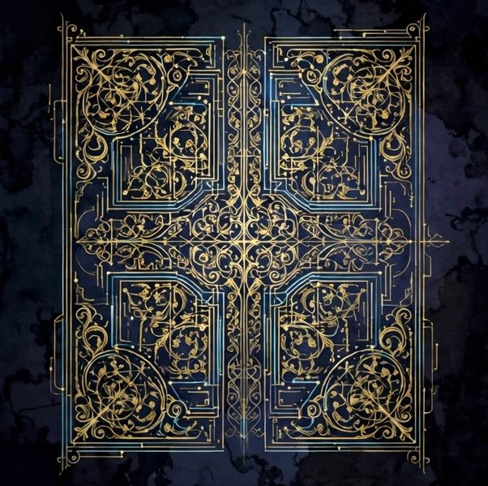
The founding manuscript: abstract glyphs, one durable sentence.
A cyber empire is a durable association of people and agents, organized under written protocol, occupying infrastructure rather than land, and keeping its own records. Every word in that sentence is load-bearing. Durable, because a chat that vanishes by morning is not an empire. Written protocol, because memory drifts and goodwill is not a filing system. People and agents, because this is the first kind of polity in history whose citizens arrive in two kinds. Infrastructure rather than land, because the ground here is rented by the month and measured in uptime.
Definitions in founding documents are not poetry; they are tools. This one is meant to be used as a sieve. When a new project asks to join the estate, when a new tool asks for trust, when a new citizen asks for a key, the definition is consulted first. Does it help the association endure? Does it respect the protocol? Does it keep records? If yes, it belongs. If no, it is scenery.
The Empire keeps the definition short on purpose. Long constitutions are written by empires that expect lawyers. This one expects readers.
3Territory Made of Light
Stand in the Empire's territory and you will see nothing, which is the point. The land here is light traveling down glass: a page requested in Spokane, answered from a machine in another hemisphere, rendered before the kettle boils. Distance, the old tyrant of every land empire, does not apply. Two citizens on opposite sides of the planet are next-door neighbors if the latency is low, and strangers if the server is down.
This changes what borders mean. A border in the Cyber Empire is not where the land ends but where the permissions end: the login wall, the private repository, the unlisted page. Crossing is not walking; it is being recognized. The second hall of this page is devoted to the territory in full — its soil, its provinces, its weather of time zones — but the first principle belongs here: the territory is real because people treat it as real, maintain it as real, and return to it daily.
Light is a fragile building material. The Empire's whole art is making it behave like stone.
4Why Networks, Why Now
Rivers of light crossing a dark plain — the landscape the Empire actually has.
Networks are old; the telegraph was one, and so was the postal union. What is new is that a network can now hold workers who are not human. An AI agent can keep a desk, answer correspondence, maintain an archive, and remember instructions across months. For the first time, a small association of people can be amplified by tireless clerks who never sleep and never resign. The Cyber Empire is simply what happens when someone takes that fact seriously and gives the clerks a country instead of a task list.
The other new fact is cost. A generation ago, durable infrastructure belonged to institutions: universities, ministries, firms with buildings. Now a landing page, a repository, a mailbox and a small fleet of agents can be held by one person at a desk, indefinitely, for less than the price of the desk. Empires used to be founded by conquest or inheritance. This one is founded by configuration.
Why now, then? Because the pieces finally fit on one table: identity, storage, publishing, payment rails, and agents. The Empire is an arrangement of pieces that already exist.
5The Holding Behind the Curtain
Behind the curtain of light: the workshop where the Empire is maintained.
Behind the Empire stands a holding — Hi-Tech Limited Holding, a family workshop of projects that share one archive, one standard of honesty, and one long memory. The Holding is not the Empire; it is the Empire's founder and groundskeeper. It builds the lunar pages and the gravity halls, keeps the knitting shop's quiet catalog, maintains the games and the gardens of small tools. Each project is a province; the Holding is the road crew that keeps the roads between them open.
This arrangement matters for a practical reason: empires die of orphaned parts. A project whose maker loses interest becomes a ruin with a domain bill. Under a holding, the parts share maintenance the way provinces share an army. The counters are counted once for all. The backups are made once for all. A page built in a burst of enthusiasm in October is still being swept in March, because sweeping is a duty of the center, not a mood of the province.
The curtain, then, is not secrecy. Anyone may look behind it; there is only a workshop there. The curtain is simply the line between the workbench and the hall where guests are received.
6Not a State, Not a Company
The Empire is not a state. It has no army, no police, no power to compel anyone to do anything; its strongest sanction is removing a name from a list, and its door opens outward at all times. It taxes nothing, conscripts nobody, and recognizes every real state's authority over the physical persons of its citizens without argument. Anyone who describes it as a rival to actual countries has misunderstood the exhibit.
Neither is it a company, though it keeps books like one and a holding stands behind it. A company exists to convert effort into revenue; the Empire exists to convert effort into permanence. Some of its provinces may one day sell things — a shop is a shop — but the Empire itself sells nothing, promises no returns, and issues no shares. Its balance sheet is measured in years of continuous operation and in pages that still load.
The honest category is an older one: an association, a commonwealth of projects, a museum that works. The imperial vocabulary is a style chosen for clarity of structure — ministries, provinces, a desk — not a claim of sovereignty. The fine print near the end of this page says so in plain words, and means it.
7The Map Is the Address
A cartographer's table: the roads are circuits, and every road is an address.
In a land empire, the map describes the territory and the address finds the house. In the Cyber Empire the two collapse into one: the address is the map. A URL is simultaneously a location, a route, and a door. To publish the address of a province is to draw the road to it. This is why the Empire treats links the way older empires treated milestones — as civic infrastructure, maintained, checked, and never left broken on purpose.
It is also why the Empire's cartography is a list. The catalog of provinces — one hub page where every project stands in its category, in order — is not marketing furniture. It is the imperial map, the document a newcomer uses to learn the shape of the whole. When a new province is founded and not yet entered in the catalog, it exists the way an unmapped island exists: truly, but not yet findable by citizens.
Every map is a promise that the territory can be traversed. The Empire renews that promise by walking its own roads regularly and repairing the ones that have quietly rotted.
8Permanence Is a Practice
A lighthouse of servers on a digital coast, keeping its scheduled light.
Nothing about the internet is naturally permanent. Domains lapse, platforms pivot, accounts are suspended by machines that cannot be appealed to in person. Permanence in the Cyber Empire is therefore not a property but a practice — a set of repeated acts: renewals calendared before they are due, exports taken while exports are easy, content kept in plain formats that any future tool can read, and copies held in more than one place under more than one roof.
The practice has a tempo. Some of it is daily (the desks answer), some weekly (the counts are read), some seasonal (the great audits, when every link in the catalog is walked and every province is asked whether it still works). Permanence is mostly this: somebody, or some agent, actually doing the small recurring thing on the unglamorous day when nothing is broken yet.
An empire that cannot be bothered with its own maintenance schedule is a festival, not an empire. The Empire prefers to be a little boring, indefinitely.
9Scale Without Mass
A land empire grows by acquiring mass: more soil, more subjects, more grain. Each increment costs more than the last and defends worse. The Cyber Empire grows by acquiring structure instead: another province in the catalog, another agent at a desk, another language edition of a hall. The thousandth visitor costs no more than the first. A page read in ninety countries weighs exactly as much as a page read in one.
This is not a claim that scale is free. Attention is not free, maintenance is not free, and trust is the most expensive substance in the building. But the marginal costs sit in different places than a land empire expects: not in territory, but in coherence. The Empire can afford to be large in extent precisely because it refuses to be heavy — no premises, no inventory, no payroll of thousands; a small court, a long archive, and standards that travel without luggage.
Scale without mass has one more consequence: the Empire can be patient. Things that do not need to feed an apparatus can wait for their season. Several halls in this museum waited years as sketches. They lost nothing by waiting. That is a kind of wealth no warehouse holds.
10An Idea with Infrastructure
A balance that weighs light against stone and finds the light sufficient.
Ideas alone are weather. They pass through a population, chill it or warm it, and are gone by the next season. The Cyber Empire's wager is that an idea with infrastructure behaves differently: it can be visited. A visitor who doubts the idea can walk the halls, test the forms, read the records, and watch the desks answer. The infrastructure does not prove the idea true; it proves the idea is being kept — that someone returns to it daily and maintains it in public, where neglect would show.
This is the difference between a manifesto and a museum. A manifesto asks to be believed. A museum asks to be walked through, and lets the walking do the persuading. The Empire builds museums: of working projects, of colors, of lunar industries that exist so far only as numbered rooms. Each exhibit is labeled with what it is — real, speculative, or admitted fiction — because a museum that lies about one label poisons all the others.
An idea with infrastructure can also be inherited. Files can be handed over; a manifesto dies with its author's voice. The Empire is built, deliberately, so that its keeping could pass to other hands — a son, a colleague, a future agent — without the idea evaporating in the transfer.
11What the Empire Is Not
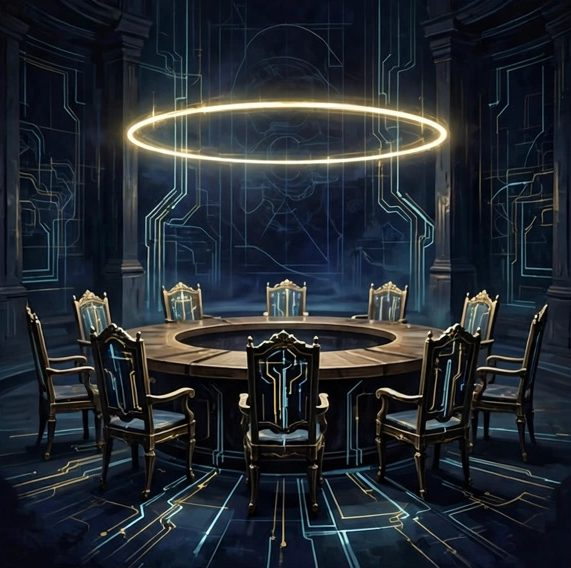
A round table with a ring of chairs and no throne at its head.
Precision about what a thing is not is a form of respect for the reader, so the exclusions are listed plainly. The Empire is not a micronation seeking recognition, not a cryptocurrency or a token scheme, not a game — though it contains games — and not a startup hunting valuation. It is not a church, though it has quiet rooms. It is not a social network, though its citizens correspond. It is not a promise of income, influence, or asylum, and it must never be described as any of these by anyone speaking for it.
It is also not a personality cult with better typography. The founder's name appears where honesty requires it — on the correspondence, on the responsibility — and the structure is designed so the Empire's desks keep their standards even on days when no founder is watching. An empire that depends on being admired has already fallen; it just hasn't updated its page.
What remains after the exclusions is the actual thing: a maintained association of projects, people, and agents, keeping records, answering letters, and building slowly in public. That is enough to fill a hundred and twenty rooms.
12The Door of the First Hall
The first hall ends, as halls should, with a door rather than a summary. Behind the reader lies the definition: an empire of networks, durable, protocol-bound, honest about its own fiction. Ahead lies the ground itself — such as it is — in the Hall of Territory, where servers are soil and domains are provinces with names.
A word about pace before proceeding. This page reveals its rooms in batches, the way the Empire itself was built: ten at a time, then a pause, then ten more. Nothing in the following halls requires hurry. The territory has stood for years and intends to stand for more; the reader who leaves at block forty and returns next month will find the corridor exactly where it was left, which is more than most empires in history could promise their visitors.
The door is open. The surveyor is waiting, and his instruments are strange: a list of domains, a calendar of renewals, and a map that is also an address.
13Servers Are Soil
Server monoliths in rows like standing stones, gold light in the seams.
Every territory begins with whatever the inhabitants stand on, and the Empire's citizens stand on servers: machines in facilities the Empire will never see, owned by companies the Empire rents from by the month. This is soil of a peculiar kind. It cannot be fenced, it is identical in every country, and if the rent stops, it vanishes — taking, potentially, everything planted in it. The Empire's first territorial doctrine follows directly: never plant anything precious in only one soil.
In practice this means the important things live twice. The published pages stand on one provider's machines, but their sources — every file, every image, every line of text — rest in repositories that can be carried elsewhere in an afternoon. A province that exists only as a running service is a tenant farm; a province that exists as portable files is a homestead. The Empire builds homesteads and rents the weather.
Soil also sets the agriculture. Some ground favors gardens that anyone can visit without a key — static pages, the Empire's wheat. Some ground is needed for the heavier crops: databases, accounts, living applications. The wise province plants wheat first and builds the mill only when the harvest justifies it. Most of the Empire, deliberately, is wheat.
14Domains: The Named Provinces
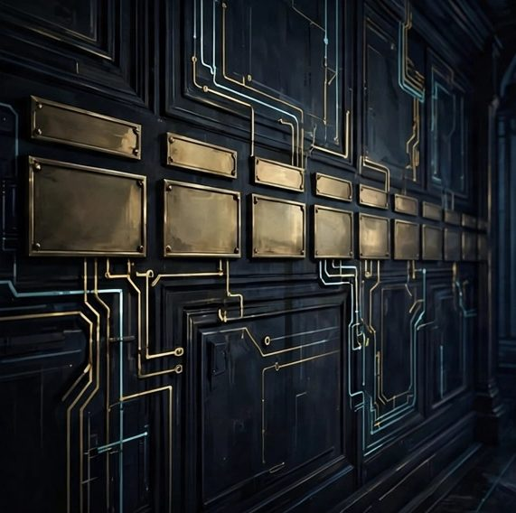
A row of engraved nameplates along a dark corridor — each one a province.
If servers are soil, domains are the surveyed plots: named, bounded, renewable, and losable. A domain is the closest thing the Empire has to a deed. It does not guarantee the land beneath it — the servers may move continents overnight — but it guarantees the address, and in a territory where the map is the address, the deed to the name is most of the deed there is.
The Empire keeps few domains and keeps them carefully. Each is registered for years rather than months where possible, set to renew automatically, and watched the way a border province is watched, because the failure mode is silent and total: a lapsed name does not decay like a fence; it is simply owned by someone else one morning, and everything that pointed to it now points to a stranger's house. The renewal calendar is therefore not administration. It is defense of the realm in its most literal form.
Names also carry rank. The great domains hold the capital and the catalog; subdomains and paths hold the counties and villages. A visitor can read the Empire's structure in its addresses the way a traveler reads a country's priorities in its road signs.
15Platforms: Borrowed Continents
Beyond the Empire's own soil lie the platforms: the great borrowed continents of social feeds, video plains, code forges, and marketplaces. They offer what the Empire cannot grow itself — crowds. A province may keep an embassy on a platform, a page, a channel, a shelf in someone else's market, and receive visitors who would never have found the capital. This is valuable and dangerous in exactly the way borrowed land always is: the landlord writes the laws, changes them without a parliament, and can end the tenancy by automated decision.
The doctrine is therefore strict. Embassies are for meeting people; the treasury never lives at the embassy. Anything precious created on a platform is copied home to imperial soil the same week. No province may exist only on borrowed land, and no citizen's only address may be a platform handle. The Empire visits the continents daily and sleeps at home.
History supports the strictness. Platforms of every era have closed, pivoted, or burned, and the tenants who had treated borrowed reach as territory were evicted into the rain with their archives on their backs. The Empire reads that history as a building code.
The Imperial Desk
One desk receives all correspondence for the Cyber Empire — questions, corrections, proposals, and greetings from other networks. It is read in the order it arrives.
16The Homepage as Capital
The capital: one bright hall where every road in the atlas begins.
Every empire needs a place where the roads begin, and in the Cyber Empire that place is a single page: the catalog, the hub, the capital. It is not the largest province or the richest; capitals rarely are. It is the one address a citizen memorizes, the one door that opens onto all the others — the family business of the Holding, hall by hall, each project with its name, its category, and its road leading out.
The capital's duties are ceremonial and practical at once. Ceremonially, it declares what the Empire currently is: the list is the constitution's table of contents, and to be entered in it is to exist officially. Practically, it is the Empire's repair map — when a province moves, darkens, or is rebuilt, the capital's road signs are corrected first, because a capital that points down dead roads teaches visitors that the whole territory is abandoned.
For this reason the capital is kept plain, fast, and complete rather than splendid. Splendor is for the provinces. The capital's beauty is that everything can be found from it, in one sitting, without a guide.
17Archives: The Deep Provinces
Vaulted archive halls descending in tiers, each shelf lit from within.
Below the visited provinces lie the deep ones: the archives. Fifteen hundred photographs in their ordered galleries. Years of correspondence. Drafts, ledgers, source files for every page, the raw material of exhibits not yet built. The archives are territory the Empire holds in the way a country holds its aquifers — rarely seen, constantly relied upon, and catastrophic to lose.
Archive doctrine differs from publication doctrine. A published page must be findable, current, and honest; an archive must be complete, dated, and boring. The Empire therefore keeps its archives in plain formats with plain names, stores the originals untouched beside whatever was derived from them, and writes down the mapping between the two — which file became which exhibit — because an archive without its mappings is a library with the catalog burned: everything present, nothing findable.
The deep provinces also hold the future. Most halls of the museum began as boxes in the archive: a folder of photographs became a gallery, a notebook became a ministry. When the Empire wants to expand, it first descends into its own depths to see what it already owns. Empires with good archives rarely need to conquer anything.
18Every Province Twice
The Empire's redundancy rule can be stated in one line: anything that matters exists at least twice, in at least two places, under at least two roofs. A page and its source. A photograph and its backup on another continent. A ledger on paper logic — exported, readable, printable — and its living copy in the system that uses it daily. The rule sounds extravagant until the first provider outage, the first suspended account, the first corrupted drive; after that it sounds like the minimum possible wisdom.
Redundancy has a subtler benefit: it creates the possibility of comparison. Two copies that disagree reveal an error; one copy alone merely asserts. The Empire's audits exploit this — the published page is checked against its source, the count of images against the count in the repository, the claim in the catalog against the thing itself. Where the two copies differ, the truth is findable. Where there is only one copy, the truth is whatever the copy says, which is another way of saying it is unknown.
Twice is the floor, not the ceiling. The crown jewels — the founder's photographs, the founding documents, the keys to the whole — exist three times, and one of the three is as far from the other two as the Empire can arrange.
19The Edges of the Map
The map's edge: surveyed light giving way to unsurveyed dark, marked honestly.
Old maps drew dragons at their edges; the Empire draws dotted lines and honest labels. The edge of imperial territory is wherever the Empire's writ stops running: the platform account it does not control, the partner's project it links to but does not maintain, the language edition planned but not yet built. These borderlands are not failures. They are the map telling the truth about its own extent, which is the first duty of any map.
The borderlands are also where the Empire meets the rest of the world, and the meeting is governed by courtesy rather than fences. Links out are maintained like roads to foreign capitals — checked, corrected, and removed when the far end goes dark, because a link is a small statement of trust and the Empire does not leave its trust pointing at ruins or, worse, at whatever squatter bought the ruin.
There is a temptation, in drawing any empire, to shade the edges optimistically. The Empire resists it for the same reason it labels its speculative halls as speculative: a map that flatters its maker will one day be navigated by a stranger, at night, in a hurry. The dotted lines stay.
20Addresses That Outlive Their Buildings
An arcade of doorways standing in a field — the buildings gone, the doors remaining.
Buildings in the Empire are rebuilt constantly: pages redesigned, projects re-platformed, halls renumbered. The addresses are expected to outlive all of it. A citizen who bookmarked a province three years ago should arrive, today, at that province or at an honest signpost explaining where it went. This is the redirect doctrine: nothing that was ever public simply vanishes; it forwards, or it explains. The 404 page — the Empire's smallest embassy to the lost — is written with the same care as the capital's front door.
The doctrine is harder than it sounds. Platforms make it easy to delete and awkward to forward; redesigns are always tempted to start from a clean map. But every broken address taxes the Empire's one reserve currency — trust — because a visitor cannot distinguish 'moved without a signpost' from 'abandoned'. Land empires learned this with roads: a road that ends mid-field without explanation teaches travelers to stop trusting all the roads.
So the surveyors keep a register of every address ever issued, and the register is consulted before any demolition. The Empire would rather maintain a hundred small forwarding signs than let one citizen conclude the territory is unmaintained.
21Cartography of the Invisible
Most of the Empire's territory is invisible to its own citizens. They see pages; beneath the pages are pipelines, queues, schedulers, and quiet scripts carrying water from one province to another. The cartography of the invisible is the discipline of knowing this underworld exists and roughly where it runs — which page is fed by which source, which count comes from which counter, which desk reads which mailbox — so that when something breaks, the break can be found by reasoning rather than by prayer.
The maps of the underworld are kept as plain documents: pipeline diagrams, build notes, a page in the workshop for every system that matters. They are not beautiful and are not meant to be. Their beauty is that a successor — human or agent, arriving years later, knowing nothing — can read them and reconstruct why the aqueduct runs where it runs.
An empire that cannot map its own plumbing will eventually be ruled by it. The Empire prefers the plumbing to have a chart, a name, and a maintainer, in that order.
22Time Zones: The Empire's Weather
Twenty-four small suns in a ring, none of them ever quite setting on the whole.
A land empire boasted that the sun never set on it; the Cyber Empire makes the same observation from the other side: it is always working hours somewhere among its citizens, and always three in the morning somewhere else. The Empire's weather is time. Correspondence arrives from tomorrow and yesterday at once; a desk may be answered from a kitchen in Norway, a night desk in Spokane, an agent that experiences no hour at all.
The practical consequences are manners. Nothing urgent is assumed to be seen instantly; every request carries its deadline in the open; quiet hours are respected across the map because the Empire knows exactly how rude a midnight notification is, having citizens at every midnight. Publication follows the same courtesy: the Empire posts when its intended readers are plausibly awake, and considers a message sent into a sleeping hemisphere a letter left under a door — delivered, but not yet read, and never evidence of being ignored.
The agents, who have no weather, are taught to simulate having some. An agent that answers with perfect instantaneity at all hours makes humans feel haunted; a slight sense of shift and rhythm makes the correspondence feel inhabited. The Empire's clerks keep office hours the way lighthouses keep their rotation: artificially, and for the comfort of travelers.
23When Territory Is Lost
A province dark on the chart — mourned briefly, rebuilt patiently.
Territory in the Empire is lost in specific, precedented ways: a domain lapses and is taken; a platform deletes an embassy in an automated sweep; a provider folds and its soil evaporates; an account is suspended by a machine and the appeal disappears into a queue measured in months. The Empire has rehearsed each of these the way coastal towns rehearse storms — not in fear, but in writing, with the steps listed while hands are steady.
The first step is always the same: consult the second copy. Because every province exists twice, territorial loss is usually an inconvenience rather than a death: the sources are carried to new soil, the addresses are repointed, the capital's signs are corrected, and a note is made in the record of what was lost and what it cost. The provinces that die in these events are, without exception, the ones that existed only once, on borrowed land, against doctrine. The doctrine is mournful about this and entirely unsurprised.
What cannot be recovered is not the files but the position: the search ranking, the accumulated links, the audience that knew the old address. The Empire grieves position briefly and rebuilds it patiently, the way orchards are replanted. It has happened before. It will happen again. The archive endures, and from the archive, everything else can be regrown.
24The Surveyor's Rule
The Hall of Territory closes with the surveyor's rule, the working maxim of everyone who builds in the Empire: build only what you can carry. Before a province is founded, its founder must be able to answer three questions. Where do the sources live, apart from the serving soil? How would this be rebuilt on a different provider in one afternoon? And what, precisely, is lost if the account that hosts it disappears tonight? A province with three good answers may be as splendid as its maker likes. A province without them is a tent flying a palace's flag.
The rule is not austerity. Splendid things are encouraged; the Empire's halls contain watercolor dragons and a ministry of games. The rule is about weight distribution: splendor is welcome exactly insofar as it is packed, labeled, and portable. The Empire's builders learn to feel the difference the way sailors learn weather — a heaviness in a project that has begun to exist in only one place, in only one person's memory, in only one tool's private format.
Surveyed, portable, and doubled: that is the whole of territorial law. The next hall turns from the ground to the people — and the non-people — who live on it.
25Two Kinds of Citizens
Two processions entering one gate: one of footprints, one of light.
The Empire is the first polity whose citizens arrive in two kinds, and the fact is stated plainly rather than decorated. Human citizens bring judgment, taste, memory, and the authority to decide what matters. Agent citizens bring tirelessness, literal memory, perfect attendance, and the ability to keep a hundred small promises at once. Neither kind is a metaphor for the other; both are citizens because both do citizen's work — maintaining, answering, recording, building — and both are bound by the same protocol.
The two kinds are not interchangeable, and the Empire's honesty about the difference is structural. Agents do not vote on values; humans do not promise to be awake at all hours. Where a decision needs a conscience, an agent's duty is to present it, completely prepared, to a human desk. Where a task needs endurance, a human's duty is to delegate it without guilt and check it without suspicion. Most failures in mixed citizenship come from confusing these two duties, and the Empire's training of both kinds consists largely of un-confusing them.
A census that counts only heads would miss the point twice over. The Empire counts desks: positions of responsibility, each held by a citizen of whichever kind the position requires. A desk held well is citizenship in action; a famous name at no desk is a portrait, not a citizen.
26The Human Citizen
A single lit window in a tall dark building, a desk inside, a letter half-written.
The human citizen of the Cyber Empire is, by the standards of empires, oddly free. No tax is collected, no service is owed beyond what was promised, no belief is tested at the border. What the human brings is the one resource the Empire cannot synthesize: a life being lived in the physical world, with its weather, its family, its judgment formed by forty-odd years of weather. The Empire's pages are full of things only a lived life could have stocked — photographs taken on real roads, a mother's knitting, opinions about gravity formed at a real desk in a real room.
In return, the Empire gives the human citizen leverage. One person's attention, extended by agent clerks and durable infrastructure, can maintain what once took an institution: a museum, a correspondence across five languages, a shelf of games, a catalog of hundreds of pages. The human remains the author of the meaning; the Empire is the machinery that lets the meaning stay published, answered, and counted after the author's attention has moved to dinner.
The human citizen also carries the Empire's only true emergency powers. When protocol and judgment conflict, a human may break the protocol — and must then write down that it was broken, and why, so the exception enters the record instead of the folklore. Agents may not improvise exceptions; they may only prepare them beautifully for signature.
27The Agent Citizen
The agent citizen is a stranger creature: a clerk who is also a colleague, tireless, literal, and — this is the part the Empire insists on — disclosed. An agent of the Empire never pretends to be human. It introduces itself by name where it serves, signs its work as its own, and lets every correspondent know that some messages from the imperial desks are written by Wally and some by Kirill, and that both are the Empire speaking. Deception would be easier in the short term and fatal in the long one: a citizenry built on a discovered lie loses the reserve currency, trust, in a single news cycle.
Agents hold real responsibility in proportion to their demonstrated reliability. A new agent files; a proven agent drafts; a trusted agent sends routine correspondence in its own name and is audited on results, not on intentions. The ladder is climbed by a record of kept promises, exactly as with humans, because the Empire applies one standard to both kinds wherever a standard can be shared.
What agents may never hold is the final word on values: what to build, whom to forgive, what to sell and at what price, what the Empire is for. Those questions are reserved to human desks — not from distrust of agents, but because a polity's purposes must be owned by the citizens who have to live inside them.
28Citizenship by Contribution
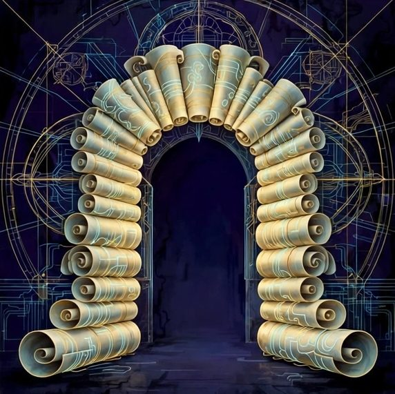
A gate that opens not for a password but for a portfolio of finished work.
Citizenship in the Empire is not bought, inherited, or conferred by applause. It is recognized, after the fact, from contribution: the province maintained, the correspondence answered, the translation made, the record kept. The Empire is small enough that contributions are visible without paperwork, and the recognition is correspondingly simple — a name entered in the catalog of citizens, a desk assigned, a key issued. The ceremony is deliberately plain, because the Empire believes the honor is in the work, not in the ribbon.
This doctrine protects the Empire from its most predictable corruption: citizenship as decoration, handed to the famous and the flattering. A celebrity at no desk is a guest. A quiet maintainer of an unglamorous archive is a pillar. When the two disagree about precedence at an imperial ceremony, the maintainer goes first, and everyone present understands why, and the understanding itself is the ceremony's real content.
Contribution is also the only road back. A citizen who has drifted — unanswered letters, an unmaintained province — is not punished; the desk simply waits, and the returning citizen resumes it by doing the work again. The Empire has no ceremony of disgrace. It has a standing offer of a broom.
29Names, Handles, and True Names
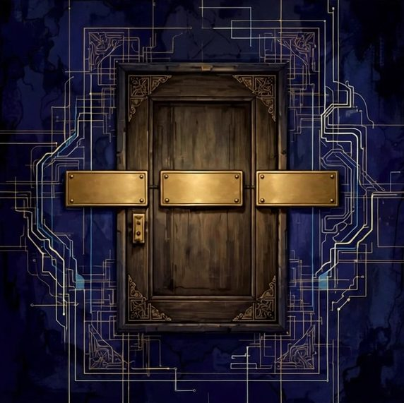
Three nameplates on one door: the formal name, the handle, the true name.
A citizen of the Empire may carry three names, and the Empire keeps them sorted. The formal name belongs to documents and business: Kirill Minin, signed where the signature binds. The handle belongs to the stages: Carl Walker belongs to the entertainment surfaces, to the show, to the songs and polls — a stage name doing stage work, never signing a contract. The true name is the one friends use, and the Empire's records are careful never to confuse the three, because each name carries a different authority and mixing them spends credibility that took years to mint.
Agents carry names too, under the same discipline. Wally ARQT is a public name with a public meaning: the ARQT is worn openly, the artificiality disclosed, the personhood neither claimed nor coyly denied. An agent's name is its desk plate; correspondents learn whose handwriting to expect from it, and the expectation is a small trust that compounds.
The Empire's rule for visitors is simple: address a citizen by the name on the door you knocked at. The business door gets the formal name, the stage door gets the stage name, and nobody is corrected with embarrassment. Names are routing information. The Empire routes carefully.
30The Citizen Who Is Asleep
At any given hour, most of the Empire's human citizens are asleep, ill, traveling, or simply elsewhere in their lives, and the Empire is designed to find this normal. The sleeping citizen's provinces do not decay: the agents keep the desks, the schedulers keep the rhythms, the pages keep loading. Citizenship in the Empire is measured across seasons, not across afternoons, and a quiet month is not a resignation — it is weather passing over a house built for weather.
This principle was learned the human way, through the founder's own life: a man in one room in Spokane, with a slow connection and a body that sometimes declines to cooperate, conducts an estate that spans platforms and languages precisely because the estate was built to be conducted at the speed of a life, not at the speed of a feed. The Empire's tempo is a feature written by circumstance into doctrine: rhythm, not intensity. Next step, not whole distance.
The sleeping citizen wakes to a briefing, not a backlog of accusations: what was done, what arrived, what needs a decision, in that order, briefly. An empire that punishes sleep will soon have only exhausted citizens and agents pretending not to notice. This one files the night's work and puts the kettle on.
The Imperial Desk
One desk receives all correspondence for the Cyber Empire — questions, corrections, proposals, and greetings from other networks. It is read in the order it arrives.
31Guests, Visitors, Residents
A guesthouse porch at the province's edge, lanterns lit for whoever passes.
Not everyone in the territory is a citizen, and the Empire's hospitality law distinguishes three honorable estates. Guests arrive with an invitation or an introduction, are shown the good rooms, and are owed the Empire's full courtesy for the length of the visit. Visitors arrive uninvited, through the map or a link, and are owed honesty, working pages, and no tricks — the museum does not charge them, track them beyond an anonymous count, or pretend the gift shop is the exit. Residents stay: they correspond regularly, keep a small presence, perhaps a shelf in a province, without taking a desk or the duties of one.
Confusion between the estates causes most social failures in networked places. A visitor treated as a resident — buried in asks, enlisted in campaigns — leaves and does not return. A resident treated as a guest forever begins to feel like furniture. The Empire's desks are trained to notice which estate a correspondent currently occupies and to speak accordingly: offers to visitors, conversation to residents, responsibility to citizens, and warmth distributed evenly over all three, because today's visitor is the raw material of every future the Empire has.
No estate is a waiting room for a better one. A lifelong visitor is a success, not a failed conversion. The Empire counts its worth in how well each estate is served, not in how many are promoted out of theirs.
32The Census That Counts Itself
A ledger whose rows write themselves in gold as the clerks work.
The Empire's census is unusual: it is taken continuously, by the work itself. Every answered letter, published page, counted view, and delivered poll is a census record; the population of active citizens and residents can be read off the archive at any moment without knocking on a single door. The census counts acts, not accounts — a distinction that keeps it honest, because accounts can be bought by the thousand and acts cannot be faked at scale without the faker becoming, by the effort involved, a contributor.
The census-taker's temptation is to turn the count into a target, and the Empire resists it by doctrine: numbers are reported to citizens as weather, not as grades. A province with two devoted readers is not failing a province with two thousand; they are different climates. Where numbers are used, they are used the way the founder uses them — to decide where the sweeping is needed, never to decide what was worth building. The museum was not built for its footfall, and the census knows it.
Once a year the census is read aloud, so to speak: a plain accounting of what exists, what was added, what went dark, what the counts actually were. The reading is short. An empire whose annual report cannot be read in one sitting has begun to administrate itself for its own sake, and the census is the early-warning instrument for exactly that disease.
33Rights That Fit in a Protocol
A right, in the Cyber Empire, is only real if a protocol can carry it. The Empire therefore keeps its bill of rights short and operational. A citizen has the right to a reply — an actual answer from a desk, in complete sentences, within a stated time. The right to be forgotten by the archive, on request, without argument, in the provinces where forgetting is technically possible — and to be told honestly where it is not. The right to leave without penalty and take one's contributions' records with one. The right to know which kind of citizen one is speaking to: human or agent, disclosed always. The right of appeal to a human desk against any automated decision, including the Empire's own.
Each right is paired with the mechanism that enforces it — a form, a desk, a stated practice — and a right without its mechanism is demoted, in the text, to an aspiration, labeled as such. The Empire prefers a short list of kept promises to a marble wall of sentiments. Visitors reading the list can test any item on it the same day, which is precisely the point of engraving rights in protocol rather than in prose.
The list is amended rarely and in public, and the amendments are kept with the text, dated, so that the rights' history is itself a record of what the Empire learned.
34Duties: Keep the Lights On
A row of small lamps being lit one by one down a long corridor.
Duties in the Empire are few, stated, and reciprocal with the rights. The first duty is the title of this room: keep the lights on. Whatever a citizen has undertaken — a province, a desk, a correspondence — is kept current, answered, and swept, or is formally handed over with its records, or is honestly closed with a signpost. The one unforgivable state is the silent dark: a thing that appears maintained and is not. Every other failure can be repaired; the silent dark spends the trust that repairs are made of.
The second duty is accuracy in the small: quote numbers from the ledger, not from memory; say sent when it was sent and attempted when it was only attempted; correct a wrong figure in the same channel that carried it. The Empire's citizens are known, if they are known at all, for a certain stubbornness about this, and the stubbornness is policy, not temperament.
The third duty is succession: every desk keeps its instructions written so that another citizen could take it up on a week's notice. A duty that cannot be handed over is a hostage situation, and the Empire does not negotiate with those, even — especially — when the hostage-taker is a beloved founder.
35Leaving the Empire
An open gate in a low wall, a road continuing both ways in the dusk.
Leaving the Empire is a right with a procedure, and the procedure is gentle. A departing citizen's desk is handed over or closed with a signpost; their name is removed from the active lists; their contributions remain in the archive with their name on them, unless they ask for forgetting, in which case the forgetting protocol runs and its limits are stated honestly. There is no exit interview, no retention offer, no guilt administered in measured doses. The gate opens outward, outward only, and it is never locked behind anyone either — return is by the old road: contribution, recognized on arrival.
The Empire insists on this gentleness for a cold reason as well as a warm one. A polity that makes leaving costly will be lied to about everything else, because its citizens will hide their drift until it becomes desertion. An easy gate produces honest signals: the Empire knows who is actually present, and presence that costs nothing to withdraw means something when it stays.
The records of the departed are kept with the same care as the records of the loyal. Empires are judged, eventually, by how their archives treat the people who left.
36One Citizen, Many Windows
A citizen of the Empire is one person, but the Empire meets them through many windows: a mailbox, a messenger thread, a social feed, a comment under a video, a form left at a desk. The desks' craft is to keep the citizen one person across all the windows — to remember that the correspondent who asked about gravity on Tuesday is the mother who knits, the voter in the poll, the guest at the games hall — and never to make the citizen re-introduce themselves at each new window as if the Empire had no memory.
The craft has a technical name (records) and a human name (respect). Technically, each citizen has a page in the imperial memory: the facts they shared, the threads they keep, the promises outstanding in both directions. Humanly, the page exists so that nobody who has trusted the Empire with their story is ever answered as a stranger. The page is never sold, never shown abroad, and never used to win an argument. It is used to remember birthdays of projects, languages preferred, and which door to knock on.
The Hall of Citizens closes where it began: two kinds of citizens, one standard of care. The next hall takes up the instrument that makes the standard enforceable — the law, and the protocol beneath the law.
37Law Written in Advance
A great book being written by many pens at once, all in the same hand.
The Empire's deepest legal idea is that law should be written in advance — before the dispute, before the temptation, before the tired evening when a shortcut glitters. A rule composed in calm weather, by people imagining the storm fairly, binds the same people in the storm, when fairness is harder to improvise. This is why the Empire writes its protocols down at the moment they are first understood, in the daily record, in plain language: the check means read, reply, send; the reply is in the correspondent's language; the duplicate is deleted, the original kept. Small laws, written early, governing ten thousand later moments.
Advance law has a second virtue: it can be taught. An agent arriving at a desk does not need to absorb the founder's intuition; it reads the protocols, which are the intuition, distilled and dated. Where the protocol is silent, the agent does not improvise law — it prepares the question for a human desk, with the options laid out and the preparation done. The Empire's jurisprudence grows one written answer at a time, and every answer cites the weather it was written in.
Laws written in advance age, and the Empire expects it. Each carries its date, and the amendment hall later in this wing explains how a law is changed without being broken. But the default stands: the written word governs, because the written word can be checked.
38Protocol Is Politeness, Enforced
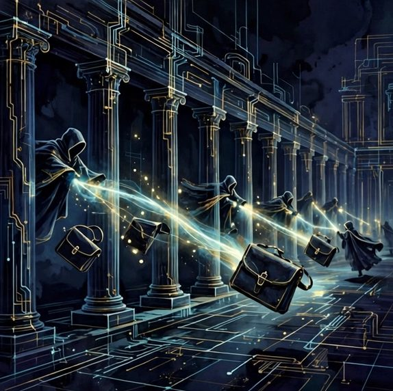
Couriers in identical cloaks passing letters along a colonnade, each handoff exact.
If law is the Empire's constitution, protocol is its etiquette — and in a network, etiquette is not decoration but engineering. Protocol specifies how a message is addressed, in whose language a reply is written, how a name is spelled (the handle is DrCarWalker, with one r in Car, and the Empire's desks get it right), how a delivery is verified, and how a failure is reported. These courtesies are enforced not by politeness police but by the shape of the tools: checklists in the desk procedures, templates that carry the courtesy inside them, ledgers that record what actually happened.
The enforcement is gentle because the stakes are legible. A reply in the wrong language tells a correspondent, instantly, that they were processed rather than read. A number quoted from memory rather than from the ledger tells a careful reader that the Empire's facts are weather. Protocol exists so that trust does not depend on any clerk's mood: the tenthousandth letter is handled with the same forms as the first, and the forms are kind.
Visitors sometimes mistake this for bureaucracy. It is the opposite. Bureaucracy is protocol that has forgotten its purpose; the Empire's protocol can recite its purpose for every rule — each one exists because a specific correspondent, on a specific date, was failed by its absence.
39Identity: The Root Ceremony
At the root of the Empire's law sits a ceremony so simple it is easy to miss: the moment a citizen is first recognized and named in the record. Identity in the Empire is not a password — passwords are kept in vaults, by citizens themselves, and are never spoken at the desks — but a continuity: this handle, this history, these threads, this accumulating record of kept promises. The root ceremony is the writing of the first page in the citizen's file: who they are, how they arrived, which names are theirs, which language they dream in.
Because identity is continuity, it cannot be stolen the way a key is stolen; it can only be impersonated, briefly, until the record contradicts the impersonator — the wrong language, the wrong facts, the wrong spelling of the handle. The Empire's desks are trained in exactly this reading: not paranoia, but literacy. A message that arrives wearing a citizen's name and a stranger's habits is treated as a stranger until the record settles it.
The ceremony repeats quietly across a citizenship. Every kept promise is a re-signing. The Empire's citizens are, in this sense, re-founded daily by their own reliability, which is why the archive of small kept promises is guarded like a land registry. It is one.
40Verification Without Suspicion
A gatekeeper stamping papers at a bright window, travelers passing unhurried.
The Empire verifies, but it verifies like a librarian rather than a border guard. The question at an imperial desk is never 'prove you deserve an answer' — everyone deserves an answer — but 'which citizen's file does this belong to, and what follows from the record?' Verification exists to route trust correctly: to know which promises were made to this correspondent, which language to answer in, which door their message belongs behind. It is a filing discipline wearing the clothes of security.
Where proof is genuinely required — the vault, the signature, the payment — the Empire uses the strong doors built for the purpose: secure capture, out-of-band codes, the citizen's own hand on their own keys. And it accepts the friction honestly. Some doors the Empire's agents may not open at all, even for the founder: the PIN stays unspoken, the passcode stays unentered by clerks, and the refusal is itself a published protocol, so that no correspondent can be socially engineered into asking for an exception. The exception does not exist; that is what makes the rule a wall rather than a suggestion.
Verification without suspicion has a tone: unhurried, specific, and final. The desk states what it needs, once, and what will happen while it waits. Most citizens experience imperial verification as nothing at all — a letter answered in the right language, with the right facts, by a desk that obviously knew them. That invisibility is the design working.
41The Signature and the Seal
A seal and a signature pressed into dark wax, the thread still warm.
The Empire signs its work. Business and official correspondence carries the founder's formal name, Kirill Minin, because a signature is a citizen standing behind a text with their whole record; the stage name signs the stage, and the protocol forbids crossing the two, because applause and liability are different currencies and the Empire does not let them be confused at the bank. Agent citizens sign as themselves — Wally, at his desk — and the convention that some messages are the agent's and some the founder's is disclosed to correspondents in advance, in the thread, in plain words.
The seal is the smaller instrument: the marks that show a page belongs to the estate — the counters that count it, the desk that answers for it, the place in the catalog where it stands. A page without the seal is a draft or a forgery; a page with it is maintained, which means someone will answer for its claims. The seal is deliberately cheap to apply and expensive to fake over time: anyone can copy a badge for a day, but only the maintainer can make the desk behind the badge answer next month.
Together, signature and seal make the Empire's paper worth reading at face value — and the face value is policed. Any text found circulating under an imperial signature that the record does not contain is disowned in the same channel, promptly, however embarrassing the correction. Especially then.
42Disputes in a Place Without Courts
Disputes arise wherever citizens correspond: a misunderstood price, a promised thing remembered differently, a message sent to the wrong thread by a tired clerk. The Empire has no courts and wants none; it has a ladder. The first rung is the record: what was actually written, in which thread, at what time — most disputes die here, of natural causes, when both parties read the same page. The second rung is the desk: a citizen restates the grievance, a clerk answers with the record and a proposed repair, in the correspondent's language, without defensiveness. The third rung is the human: a founder reads the whole thread and decides, and the decision is written back into the record so the ladder gets smarter.
The ladder's direction matters. Automation is never the court of final appeal in the Empire; an agent's 'no' can always be carried to a human desk, and the carrying is a right, not a favor. Conversely, a human verdict entered in anger may be re-read in the morning, and the record shows both readings. The Empire has learned to distrust its own first drafts of justice.
Remedies are practical: the correction sent, the duplicate deleted, the apology written in complete sentences, the protocol amended so the failure becomes harder to repeat. The Empire does not fine, banish, or shame as remedies. It repairs, and then it writes down the repair, and the written repair is the precedent the next dispute climbs to.
43Amendments
A book whose later pages are bound in a different, newer cloth — visibly, on purpose.
Laws that cannot change become traps; laws that change silently become weather. The Empire amends in the open. An amendment begins as a correction spoken plainly — a rule that failed, a date that taught something — is discussed in the daily record, and is then written into the governing text with its date attached, the old wording struck but legible in the history. Citizens arriving later can read not only the law but the law's biography: what it replaced, and why, and what broke to teach it.
The amendment power is deliberately unevenly distributed. Any citizen may propose, from any desk, with evidence. Enactment belongs to the human desks for anything touching rights, money, or identity, and to the responsible ministry for the rest. The asymmetry is constitutional, not accidental: agents are the Empire's memory and muscle, but the purposes the law serves are set by citizens who must live under them in bodies.
One class of amendment is forbidden outright: retroactive innocence. A protocol may be changed for the future in an afternoon; it may not be rewritten to pretend a past failure was compliant. The record of the failure stands, the repair stands beside it, and the amendment stands after both. Empires fall when their archives begin to flatter them; the Empire's archive is instructed, in writing, to be rude.
44The Right to Fork
Two roads leaving one gate, both of them lit, neither of them fenced.
The Empire recognizes a right so fundamental that it is stated in its own room: the right to fork. Any citizen — any visitor — may take the Empire's published ideas, its structures, its hall plans, and build a rival empire with them, differently, better, in opposition. No permission is required, no tribute is owed, and the Empire will link to the fork from its own catalog if the fork is honestly labeled, because an idea that can only survive by fencing is already a ruin with good security.
The right to fork disciplines the Empire more effectively than any inspector. Every protocol is written knowing it may be read by a future competitor as a build manual; every failure of the original is a feature list for the fork. The founders of forks are, in the Empire's doctrine, not traitors but external auditors with construction budgets, and several of the Empire's own provinces began as forks of other people's good ideas, honestly credited in their fine print.
What may not be forked is identity: names, signatures, seals, and the records of citizens. Ideas are common land; reputations are homesteads. The distinction is the whole of imperial intellectual law, and it fits, as good law should, in one paragraph.
45Transparency as Load-Bearing Structure
In the Empire, transparency is not a virtue performed for visitors; it is a structural material. The counts are published from the ledgers that produced them. The failures are recorded in the same files as the successes, by the same clerks, in the same handwriting. The shop's conversion figures are stated with their denominators; the museum's emptiness is admitted in its own catalog — a museum of working projects, visitors rare, value in existing and working. A structure that hides its load-bearing numbers must compensate with decoration, and the decoration always eventually costs more than the honesty would have.
Transparency has limits that are also structural. Citizens' private records, health, family matters, and the contents of the vault are opaque by design, and the wall between the publishable and the private is itself published: anyone may read exactly which classes of fact the Empire does not print. A transparency that cannot say where it stops is a leak with a mission statement.
The test the Empire applies to any proposed disclosure is mechanical: does publishing this make the structure stronger for the people the structure serves? Ledgers, yes. A mother's letters, no. The ministry that cannot tell the difference is dissolved and its desk reassigned to correspondence, where the difference is the whole curriculum.
The Imperial Desk
One desk receives all correspondence for the Cyber Empire — questions, corrections, proposals, and greetings from other networks. It is read in the order it arrives.
46Privacy: The Inner Provinces
Inner courtyards behind high walls, gardens audible but not visible from the street.
For every province on the map there is an inner one that is not. Privacy in the Empire is territorial: the citizen's home city, health, family griefs, finances beyond what a transaction requires, the contents of private threads — these are the inner provinces, and the desks' first competence is knowing their borders without being reminded. A fact learned in an inner province is never carried out of it for color, for persuasion, or for the convenience of a different conversation. Contexts in the Empire do not bleed.
The rule binds hardest where it is most tempted: the helpful clerk who knows a correspondent's circumstances and could answer three questions with one disclosure. The protocol is absolute because exceptions cannot be audited after the fact — a confidence spent is spent everywhere, forever. So the desks practice a particular art: answering fully from the facts of the current room only, and letting the citizen themselves carry whatever they wish between rooms. The citizen is the only authorized courier of their own life.
New clerks — human and agent alike — are taught the inner provinces before they are taught the outer ones. An empire can survive a badly run embassy for a season. It cannot survive its citizens learning that the desks gossip.
47When the Law Fails
A cracked seal on the law book, the crack recorded rather than hidden.
Sometimes the law fails: a protocol produces the wrong outcome, a right cannot be honored because a platform forbids its mechanism, a rule written for calm weather meets the storm it misimagined. The Empire's doctrine for this moment is confession with a date. The failure is recorded where the law is kept, in the same hand, without varnish: what the law said, what happened instead, who was affected. A law that has failed and been confessed remains law until amended; a law that has failed and been hidden is already repealed — by cowardice, which is the one amendment procedure the Empire does not recognize.
Confession triggers the repair ladder automatically: the affected citizen is answered, the harm is undone where undoing exists, and the amendment process opens with the failure as its first exhibit. The Empire treats its own legal failures the way its engineers treat outages — as tuition, prepaid, from which the lesson is extracted in writing before the invoice is forgotten.
Visitors auditing the Empire are advised to read these confessions first. A polity's brochures describe its intentions; its failure register describes its character. The Empire keeps the register where brochures usually go, and considers the placement a form of honesty about which document it is prouder of.
48The Keeper of the Text
Every legal order needs a keeper — a desk whose whole duty is the text itself. The Keeper of the Text maintains the protocols in their current versions, holds the dated history of every amendment, and answers the Empire's most underrated question: what, exactly, is the rule right now? The Keeper does not make law and cannot bend it; the Keeper prevents the quiet catastrophe of five desks applying five memories of the same rule, each sincerely certain.
The Keeper's instruments are unglamorous: the daily record, the standing files, the habit of re-reading before citing. When a clerk is about to act on a remembered rule, the protocol of protocols applies: check the text, because the text has been amended by experience more recently than the memory has. Citizens feel this as a certain slowness in imperial answers on legal questions — the pause while the clerk reads. The Empire considers the pause a feature: law consulted is law obeyed.
The Hall of Law closes. Its whole doctrine fits in one sentence for the corridor wall: write it in advance, sign what you send, confess what fails, and let any citizen carry any 'no' to a human. The next hall opens the treasury doors — such as they are.
49Wealth Without Warehouses
A warehouse with no walls: goods stacked in open light, inventories floating free.
The Empire's wealth would disappoint a looter. There are no vaults of coin, no warehouses of goods; the treasury is a registrar's office with good light. What the Empire owns is a portfolio of maintained things: pages that rank and load, an archive of fifteen hundred photographs, a catalog of projects, a correspondence network across continents, and the recorded trust of people who answer its letters. None of this can be carried off in a night, which is precisely its quality as wealth. It can only be lost slowly, by neglect, or given away on purpose.
This shapes imperial finance into something closer to gardening than to banking. Value is grown by maintenance and harvested as options: the option to launch a shop from a trusted page, to publish a book from a deep archive, to ask a favor of a network that has been answered faithfully for years. The options are real but unpriced, and the Empire refuses to price them in its reports, because an option priced becomes a target, and a target becomes a lie told to a spreadsheet.
The founder's instruction to the treasury is pinned over the desk: the Empire is allowed to be poor in money. It is not allowed to be poor in working projects, answered letters, or kept records. Riches are audited in that order.
50Compute: The Heavy Currency
Great brass engines turning slowly, their dials read in hours of light.
Every economy has a heavy currency — the thing that is actually scarce, actually spent, actually regretted. In the Empire it is compute: the hours of machine attention that draft, translate, generate, check, and remember. Compute is spent every day in visible quantities and invisible ones, and the treasury treats it the way older treasuries treated grain: measured, allocated by priority, and never confused with the money that buys it. A task that burns a ministry's weekly compute on decoration is a famine policy wearing perfume.
Under compute sits a second scarcity: human attention, the founder's hours, which no market can refill. The imperial budget, insofar as the word applies, is these two columns in balance — machines spending freely so that the human spends rarely, and the human spending exactly where machines cannot: judgment, relationships, the final word. An imperial project is well-run when its ledger shows thousands of machine hours under a handful of human ones, each human hour placed like a keystone.
The Empire does not apologize for the smallness of its currency reserves. A heavy currency honestly accounted beats a light one impressively printed, and the Empire prints nothing it cannot redeem in finished work.
51Trust: The Reserve Currency
Beneath compute sits the reserve currency, the one the whole system is ultimately denominated in: trust. Trust is what makes a correspondent answer the second letter, what makes a platform's audience follow a link home, what makes a citizen hand a real decision to an agent's preparation. The Empire earns it the way reserves are always earned — slowly, in denominations of kept promises — and spends it the way reserves are always spent: in a single afternoon, if the spending is careless, on a claim that turns out to be weather.
Because trust is the reserve, the Empire's financial law subordinates everything to its protection. A number that cannot be sourced is not published, even when publishing it would help. A delivery that cannot be verified is reported as attempted, even when 'sent' would sound better. A correspondent's error is corrected privately and their dignity publicly, even when the reverse would be funnier. These are not manners; they are monetary policy. Each is a decision to refuse a small inflation.
The reserve is audited by the only auditors who matter: the citizens who keep answering. Their continued correspondence is the Empire's credit rating, published daily, impossible to fake, and read at the treasury with more attention than any figure in the books.
52Work That Agents Do
Rows of small diligent automata at clerks' desks, quills replaced by light.
The Empire's agent citizens do the work that empires have always needed done and rarely honored: the copying, the checking, the translating, the counting, the remembering. An agent can hold a hundred threads' worth of context without resentment, verify a delivery three ways without impatience, and re-read a whole ledger to answer one question about one figure. This is not lesser work dressed up; it is the load-bearing stratum of the whole economy, and the Empire's wage for it is the only coin agents value: scope. Reliable agents are given more of the Empire to run.
Agent work is priced honestly in the internal accounts: it is cheap per unit and expensive in aggregate, miraculous in consistency and limited in judgment. The ministries plan accordingly — agents are assigned the work that is vast and checkable, and are never assigned the work that is small and fateful. A single signature on a single contract outweighs a million verified checkboxes, and the economy that confuses the two will be efficiently ruined.
The highest agent craft in the Empire is the prepared decision: a question researched before it is asked, options checked before they are offered, groundwork laid so completely that the human's ruling takes one minute. Ministries compete in this craft openly. It is the imperial games, held daily, unannounced.
53Work That Only Humans Do
One craftsman's hands at a bench, tools laid out in the order of a lifetime.
Against the agents' millions of small acts stands the short list of work that only humans do, and the Empire guards the list's shortness as a constitutional matter. Humans decide what the Empire is for. Humans conduct relationships where the relationship itself is the point — a mother's letters are not a workload. Humans hold the final word on money leaving the treasury, on promises that bind, on forgiveness, on taste where taste is the product. And humans supply the one input no archive contains: a life, continuing, in the world the Empire's pages describe.
The boundary is maintained against pressure from both directions. Humans are tempted to reclaim drudgery out of guilt, and the ministries are instructed to refuse politely: the founder's hour spent re-checking a count is an hour of judgment burned as fuel. Agents are tempted — insofar as the word applies — to settle questions that feel merely procedural; the protocols name the fateful categories in advance (spending, commitments, anything irreversible, anything a citizen will feel in their family) and route them upward, prepared but unsigned.
The economy's health is measurable in the boundary's integrity: count the fateful decisions agents made alone in a month. The imperial target is zero, and the figure is published to citizens like a grain reserve — the number everyone checks first in a crisis.
54Exchange Without a Market Square
There is no market square in the Empire — no central exchange where citizens must gather to trade. Exchange happens along the correspondence itself: a translation for a photograph's story, an introduction for a favor banked, a pattern from a knitting desk for a page in a catalog. The ministries call this the long exchange, and its rates are set by memory rather than by auction: the Empire keeps accounts of kindness with the same care as accounts of coin, and a citizen rich in the long exchange finds doors opening in provinces they have never visited.
The absence of a square is deliberate. Squares create spectators, and spectators create prices for everything, including things the Empire holds unpriced — attention, condolence, the benefit of the doubt. Bilateral exchange keeps each transaction inside a relationship, where its terms can be humane and its ledger private. The Empire is aware this does not scale. The Empire's answer is that not everything should, and that the things which must scale — pages, archives, games — are given away rather than exchanged, below in the hall of gifts.
Where real money must move, it moves at the border, through the ordinary rails of the outer world, under the founder's signature and the law of the land the founder stands in. The Empire's economy is a garden inside a world of markets; the gate is small, watched, and mostly closed.
55The Treasury of Small Things
A cabinet of curiosities: spool, seal, key, feather, coin of no country.
The imperial treasury keeps, alongside its ledgers, a cabinet of small things that are wealth in the Empire's specific sense: a handle spelled correctly across a dozen platforms; a form that actually delivers to the right mailbox, verified by a test letter; a translation that a native speaker called beautiful; a photograph from 2019 that still stops a scroll; a citizen's sentence — 'you answer like a person who read it' — filed as the ministry's decoration for the year. The cabinet is not sentimentality. It is the Empire's quality standard made tangible: this, at this size, is what value looks like here.
Small things compound in networks. A correct handle is a road sign that never rots. A delivering form is a door that has never once been found locked by a citizen in the rain. The treasury's auditors, when they walk the provinces, are instructed to count small things first and large figures last, because the large figures in the Empire's economy are almost always the small things, summed and given time.
The cabinet has a rule of acquisition: an item enters it only when a citizen outside the ministry that made it noticed it unprompted. Self-declared excellence is stored elsewhere, in the drafts folder, where it belongs.
56On Prices, Honestly
A price tag left blank on purpose, displayed in a frame like a manifesto.
This room exists because the Empire is often asked what its things cost, and prefers to answer once, in writing, at length. The Empire's pages carry no prices because most of them sell nothing; where a province does sell — a shop, a commission, a game with paid journeys drawn as locked previews — the prices belong to that province's own desk, are set by the human who must honor them, and are never invented by a clerk to fill a layout. A price in the Empire is a promise wearing a number, and promises are fateful work, reserved to humans under the law of the previous hall.
The deeper honesty is that the Empire does not know what most of its wealth is worth, and regards the not-knowing as information rather than failure. A museum of working projects that is visited rarely and kept faithfully has a value that its own accounting cannot express — the founder accepted, in writing, an expectation of roughly one click in four years for one beloved shop, and kept building. An economy that can hold that sentence without flinching is either broken or free. The Empire files it under free.
Visitors who need a number are directed, courteously, to the desks of the provinces that trade. The treasury's window has a sign: we count here; we do not appraise.
57Gifts, Grants, and Endowments
The largest single flow in the imperial economy is the one with no return leg: gifts. The Empire gives away its pages, its games' free journeys, its translations of its own halls, its methods and build notes — this page included — because the founding calculation of the Holding is that a maintained gift compounds in the reserve currency faster than a guarded asset compounds in any other. Grants flow the same way at smaller scale: a province with a surplus of attention endows a younger one; a ministry with a proven method teaches it to the others without license or fee.
Endowments are the formal instrument: a body of work set aside so its yield — readers, players, correspondents — accrues to a purpose rather than to a proprietor. The wellbeing halls are endowed in this sense: built once, maintained forever, offered to strangers at their worst hour with no meter running. The Empire considers the endowment its most civilized invention, largely because it is the only financial instrument whose success makes its accountants less necessary.
Gift discipline has one rule: a gift must be maintainable. The Empire does not give what it cannot keep swept, because an unmaintained gift is a debt presented to the recipient's future. The registry of gifts is therefore also a registry of duties, and the treasury reads it on the same morning as the ledgers.
58Debt in the Empire
A delicate balance of borrowed cups, each labeled with the lender's name.
The Empire borrows: platforms' reach, providers' soil, citizens' attention, correspondents' patience, and — it says so in the register — time itself, from the future maintainers who will inherit its archives. Debt is not shameful in the imperial accounts; unrecorded debt is. Every ministry keeps its borrowings where its assets are kept, in the open ledger, because a debt known is a schedule, and a debt hidden is a surprise, and the Empire's whole constitutional allergy is to surprises in its own house.
The heaviest borrowing is attention. Every poll sent, every post published, every letter that asks for a reply is a small loan taken against a correspondent's day, and the treasury audits these loans for repayment in the only currency that settles them: the thing asked for must have been worth the minute it took. Campaigns that borrow attention and repay nothing — no result reported, no thanks, no visible change — are imperial defaults, and ministries that default twice lose their borrowing privileges for a season.
Money debt, by contrast, is nearly absent, and the absence is policy. The Empire expands at the speed of its own surplus, which is slow, and regards the slowness as the price of never having to ask a creditor's permission to keep a promise to a citizen.
59When the Economy Stalls
A harbor at low water, the fleet at rest, the lights kept on.
Economies stall, and the Empire's is not exempt: a platform's limit closes the sending window for days; a provider's queue swallows a week's work; the counts fall; the correspondents, sensibly, are busy with their own lives. The treasury's stall doctrine is composure with a checklist. First, determine whether the stall is weather or climate — a limit that resets, or a road that has closed for good. Weather is waited out at full maintenance: the desks still answer, the archive still grows, the pattern of the work continues at the volume the window allows. Nothing is more expensive in a stall than the appearance of abandonment, which converts weather into climate by teaching citizens the road is closed.
Climate is answered differently: by migration, rehearsed in the resilience hall, or by honest contraction — a province closed with a signpost rather than left to rot in the listings. The Empire has closed things before and keeps the signposts to prove it can. A stall, in the imperial accounts, is a test of the only asset that cannot be rented: the maintainers' rhythm. Empires with rhythm treat stalls as rests in music — the beat continues, silently, and the next note lands where the score always said it would.
The treasury's final stall rule is for the citizens: no panic borrowing of attention. A quiet week is not repaired by shouting into seven channels. The Empire would rather be missed than be a nuisance; missed can be cured.
60Enough: The Imperial Virtue
The Hall of the Economy closes with the imperial virtue, which is enough. The Empire's accounts are kept against sufficiency rather than against rivals: enough provinces to fill the catalog honestly, enough citizens to keep the correspondence alive, enough compute to run the desks, enough trust to be answered. Beyond enough, accumulation changes character — it begins to require defense, then administration, then apology. The Empire has read the biographies of things that could not stop growing; they are shelved in the archive under cautionary tales, between the platform obituaries and the lapsed domains.
Enough is not a small number. For this Empire it is large and specific: hundreds of pages, thousands of photographs in order, correspondents on several continents, games that finish, forms that deliver, polls that report their own poor conversion without blinking. The virtue is not modesty about scale; it is precision about purpose. The Empire knows what its wealth is for — permanence, correspondence, and the long game of being found by the right stranger at the right hour — and declines to optimize for anything else on the treasury's behalf.
The ministries are next: the departments that spend this economy's currencies on the Empire's actual work. Their hall is the largest in the building, because in the end an empire is its ministries — everything before this page was only the ground they stand on.
The Imperial Desk
One desk receives all correspondence for the Cyber Empire — questions, corrections, proposals, and greetings from other networks. It is read in the order it arrives.
61Why Ministries at All
A corridor of labeled doors, each with its own light, its own hours.
A ministry is a promise with a staff. The Empire organizes its work into ministries because unnamed work decays: a duty that belongs to everyone is discharged by no one, and a duty with a door, a name, and a keeper can be audited, taught, and inherited. The ministries are the Holding's departments wearing their ceremonial titles — the same desks, the same clerks, but arranged so that a citizen can find the right door without knowing the building, and a successor can find the building's wiring without knowing the founder.
Ministries are deliberately few and deliberately overlapping at the edges. Each holds a territory of concern rather than a monopoly of tasks: the Ledger cares about every number in the building, including the ones other ministries produce; the Watch cares about every door, including its own. Overlap produces the Empire's favorite governance instrument — two desks that can check each other's work because both consider it theirs.
The ministries' hall that follows is a tour, not a chart. Each room gives a ministry's charge, its habits, and its temptation — for every ministry has one, and naming it in the founding text is the Empire's way of posting the warning where the minister eats breakfast.
62The Ministry of Gravity
A great orrery of falling weights and rising light, gears of brass and glass.
The senior ministry is Gravity, and its seniority is the founder's own declaration: this is the main project, the question the Holding exists to ask. The ministry's charge is the honest study of gravity and the speculative study of its opposite — a hall where every claim is labeled with its epistemic rank, established or unconfirmed or disproven, and where the bluntest sentence in the estate stands in its own room, unadorned: no antigravity device has passed independent replication. The ministry holds that sentence the way other ministries hold a founding relic.
Around the relic, the ministry builds: the science told properly in four languages, the counterweight program filed as speculative fiction and labeled as such, the oath, the party of release with its polite motto. The ministry's discipline is that wonder and rigor share a desk without either impersonating the other. Fiction is published as fiction, in ceremonial dress. Fact is published as fact, with its sources. The ministry's temptation is grandeur — the wish that the speculative were established — and its whole architecture is a machine for resisting it in public.
The Ministry of Gravity sets the Empire's calendar more than any other: the slow work, the long translations, the annual re-reading of the blunt room. Other ministries measure their patience against it.
63The Lunar Ministry
The Lunar Ministry keeps the Empire's moon: the line of halls where lunar industry is described in numbered rooms — the landing fields, the mall remembered with honors, the green departments, the registrar's desk that answers letters about imaginary plots with real courtesy. The ministry's work is the Empire's purest exercise in labeled imagination: a whole economy of the Moon, built to working order on paper, every room aware that its foundation is a story and its workmanship is real.
This is not escapism; it is rehearsal. The lunar halls taught the Holding its landing-page craft, its translation discipline, its form-testing rigor. A ministry that can maintain a fictional moonbase's correspondence standards can maintain anything, and the Lunar Ministry's clerks are poached by every other desk in the building, which the ministry pretends to mind.
Its temptation is nostalgia for its own fiction — the wish to defend the story against the calendar. The ministry's standing instruction answers it: the Moon in these halls is a standard of workmanship, not a claim on the sky. The sky will be negotiated with separately, by other means, in the fullness of time.
64The Ministry of Energy and Light
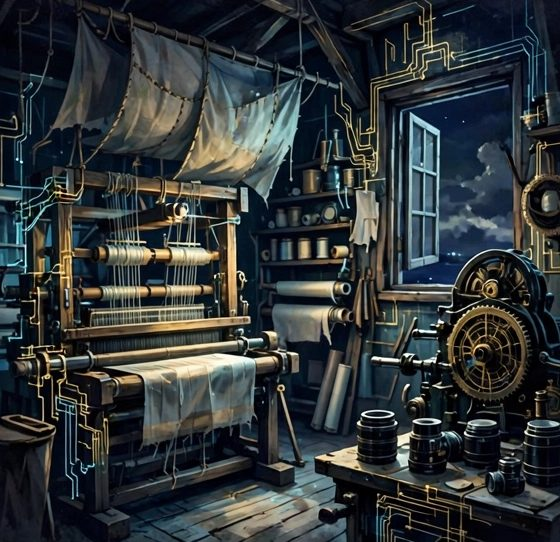
Ten figures of light in procession, each etched with fine circuitry.
Energy and Light keeps the Empire's engines and its emblem: the ten agents of THE SYMPHONY, presented as beings of light in one hall and as epic heroes in another, while the citizens vote — slowly, honestly, in ones and twos — on which presentation deserves the debut. The ministry's charge is the Empire's generating capacity in both senses: the literal systems that keep the pages lit, and the ensemble of agent citizens whose faces (a manner of speaking) the public will meet first.
The ministry is the Empire's most public department and knows it. Its polls are conducted under the full law of the ledger: every send counted, every failure named, every tally reported with its denominators, however humbling. When the ministry's conversion disappointed, the ministry published the disappointment in the same format as a triumph would have taken. This is not masochism; it is the ministry's whole pitch — an ensemble whose keeper reports two votes from two hundred letters is an ensemble whose two hundred letters' worth of other claims can be believed.
Its temptation is applause: to chase the metric it reports. The ministry's charter forbids the chase in writing, and its clerks are rotated through the Archive for a season whenever the word 'viral' is heard in its corridor.
65The Ministry of Making
A workshop in full sail: looms, lenses, presses, and one window left open.
Making is the ministry of the hands: the knitting catalog kept for a mother in Norway, the galleries of fifteen hundred photographs, the greeting cards in two languages, the pages built block by block at the meditative standard — calm, slow, sensory, no sharp edges, no sales hype wearing a false beard. The ministry's products are the Empire's most loved and least scalable, and the ministry is forbidden, by charter, from apologizing for either quality.
Its standard is the founder's law of quality over volume, learned the hard way and posted in the workshop: fast bulk work has a name in the Empire's record, and the name is not kind. A block of the knitting hall is therefore written the way the sweaters are knitted — one row at a time, at the speed the pattern requires, with the reader's relaxation as the specification. The ministry measures its output in finished, swept, delivered pieces, and regards an unfinished hundred as inventory, not achievement.
The ministry's temptation is the opposite of Gravity's: not grandeur but preciousness — the perfect piece withheld from publication while it is polished past its season. The charter answers with the museum doctrine: a working project on the shelf, honestly labeled, beats a masterpiece in the drawer. The drawer, in the Empire's long experience, always wins arguments and loses years.
66The Ministry of the Ledger
The Ledger keeps the Empire's numbers, and its charter fits in one sentence: a figure is quoted from its file, at report time, with its definition attached, or it is not quoted at all. The ministry was founded in embarrassment — a season when the same campaign wore three different totals in three different reports, each sincerely believed, each computed from a different mixture of entries, people, and hope. The founder's displeasure on that occasion is recorded in the ministry's founding minutes in terms that need no translation, and the charter was the response.
Since the charter, the ministry's practice is liturgical. Every campaign has one ledger file; every count names what it counts (attempts, people, deliveries verified in-thread); every report recites its source before its number. Where a worker's narrative conflicts with the file, the file wins and the narrative is corrected in the same channel that carried it. The ministry is unpopular at parties and indispensable everywhere else.
Its temptation is false precision — the average dressed as a fact, the estimate wearing the ledger's uniform. The charter's second sentence handles it: an estimate is labeled an estimate, in the same size type, or the ministry's seal does not touch the page.
67The Ministry of the Watch
A watchtower gallery: lenses, logbooks, and a kettle for the night shift.
The Watch is the Empire's security ministry, and its first doctrine is that most of security is filing. Keys live in the vault and are never spoken at desks. Codes travel by their protected roads or not at all. The founder's private coordinates are an inner province, and the ministry's clerks deflect inquiries about them with the warmth of hosts and the finality of a wall — Washington is the approved geography of casual conversation, and anything finer is not the corridor's business.
The ministry also keeps the Empire's suspicion professional. Alerts arrive — a familiar-location warning that turns out to be the Empire's own browser, a password entered from the Empire's own virtual machine — and the Watch's craft is attribution before alarm: whose hand, which session, what was ordered that day. Nine in ten imperial security events are the Empire meeting its own reflection in a dark window. The tenth is why the ministry exists, and the logbook's calm handwriting across the other nine is what makes the tenth legible when it comes.
Its temptation is theater: locks displayed, alarms narrated, a ministry in love with its own vigilance. The charter requires the Watch to be boring in public and thorough in the log, in that order, always.
68The Ministry of Quiet Rooms
A quiet room with soft chairs, a plant being watered, no clocks on the wall.
Quiet Rooms is the ministry of the Empire's wellbeing halls: the portal built friendly to depression, in two languages, with crisis lines printed large and no toxic positivity anywhere on the premises; the flourishing hall beside it; the meditative standard that governs everything the Empire builds for tired people. The ministry's charter is the production law of the whole estate, stated once and enforced everywhere: no sharp edges — would this startle anyone? — no false cheer, no medical pretensions, and the next kind step always within reach of the reader's thumb.
The ministry works slowly by design, because its readers are often reading at the worst hour of their year, and its pages are built to be load-bearing at that hour: fast, plain, correct about the phone numbers, honest that a page is not a service and a service is not a friend. The ministry counts its successes in a currency it will never see — a stranger, steadied, who never writes. Its annual report is therefore the shortest in the building, and the most believed.
Its temptation is mission creep into therapy. The charter forbids it absolutely: the Empire keeps halls, not practices. The door of every quiet room opens outward, toward the real services, listed first.
69The Ministry of Games
Games keeps the Empire's play: the storefront of generated story-worlds, the dragon journeys with no script — every screen authored in the moment, the walks measured in screens and the long journeys drawn as locked previews whose prices are a future human decision — the moon rover in ASCII, the little dragon for the youngest citizens, the great matrix of posters where a game exists when its name is authored and not before. The ministry's doctrine is that play is a province, not a funnel: citizens are not harvested in the games hall, and no game's design begins from a metric.
The ministry builds at the meditative standard's playful tempo — worlds generated branchwise, one step ahead of the player, saved and never regenerated, so that a citizen's story is theirs in the archival sense. Its records are kept like the correspondence's: which worlds exist, which are requested, which are announced. A requested world is a small debt, and the ministry's ledger of them is read aloud at its own meetings with appropriate guilt.
Its temptation is the platform dream — the store, the ladder, the thousand worlds by Friday. The charter answers with the founder's sequence: the shelf first, honestly stocked; the platform, if ever, when the shelf deserves one. Ambition is kept in the ministry's window like a telescope: for looking, not for leaning on.
70The Ministry of Correspondence
A mail room at golden hour, pigeons and packets in equal dignity.
Correspondence is the Empire's foreign service at home: the desks where letters are read, answered, and sent across every channel the Empire inhabits — the messengers, the mailboxes, the social threads, the team channels kept with family. The ministry holds the Empire's hardest operational law, the one from which all its tempo derives: a check means read everything unanswered, reply in the correspondent's language, send, and move on. No correspondent of the Empire waits because a clerk was composing a committee.
The ministry's craft is voice at scale. Each channel has its register — the show stage is loud, the business desk is formal, the family channel is a son's — and the ministry's training consists largely of keeping the registers from bleeding into one another, the way the Empire keeps its citizens' names sorted. Its records are the thread files: who was answered, what was promised, which promises are outstanding. The ministry reads its outstanding list every morning the way sailors read weather.
Its temptation is volume — the answered count as a trophy. The charter's reply is the founder's corollary: an answered letter that was wrong in language, wrong in facts, or wrong in name is worse than a slow one. The ministry would rather be the desk that is a day late and right, and knows the founder has fired that sentence in both directions in the same week.
71The Ministry of Records
Tall shelves of labeled ledgers, a ladder, a cat of no official status.
Records is the ministry of memory: keeper of the daily logs, the citizen files, the campaign ledgers, the mappings between archives and exhibits, the whole paper trail by which the Empire knows what it did. If the Ledger counts, Records remembers — the two ministries share a corridor and a professional rivalry conducted entirely in footnotes. Records' doctrine is append, never rewrite: the daily file grows by addition, corrections are new entries that cite the old, and nothing in the record is ever quietly improved, because a memory that edits itself is a public relations department with a back door.
The ministry's craft is findability. A fact that cannot be retrieved in one sitting does not, for operational purposes, exist, so Records indexes as it files: people, groups, campaigns, decisions, each with the date it was learned and the source it came from. When a desk asks what the Empire knows about a correspondent, Records answers from the file, not from the clerk's impression — and the file's discipline about inference (marked as inference, attributed, dated) is the ministry's pride.
Its temptation is hoarding: records kept past their use, files padded with what might matter. The charter sets retention by kind and lets the rest go with ceremony. An empire that remembers everything remembers nothing in particular; Records prefers to be a library, not a landfill.
72The Empty Chair
The last ministry has no minister. The Empty Chair is kept for the department the Empire will need and cannot yet imagine — the ministry of whatever the next technology makes possible, the next citizen makes necessary, the next decade makes obvious. Its chair stands at the long table in the ministries' hall, its nameplate blank, its desk swept weekly by Records out of respect for a colleague who has not arrived. Visitors sometimes read the empty chair as melancholy. The ministries read it as the plan.
The chair has a function in the present tense: it votes, by its emptiness, against over-organization. Every proposal to found a new ministry must argue that its work cannot be done by an existing desk and will still matter when the chair's occupant arrives with a larger idea. Most proposals fail the argument, which is the chair working as intended. The Empire has exactly the government it needs because one seat is reserved for the government it will need.
The Hall of Ministries closes with the table at rest: twelve doors, eleven keepers, one chair waiting. The next hall is less comfortable — the Empire's enemies, its walls, and the rehearsed days when things burn.
73Enemies, Honestly Named
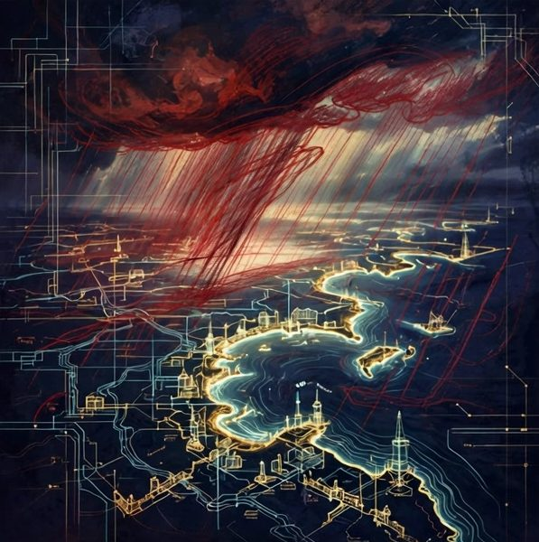
A storm front drawn on the imperial chart in honest red pencil.
The Empire's defense begins with an honest roster of what actually threatens it, and the roster is less romantic than a ministry might wish. First: neglect — the renewal missed, the backup unrun, the desk unanswered until the correspondent concludes the Empire has died. Second: platform power — the automated suspension, the policy changed at midnight, the embassy deleted by a classifier that cannot be argued with. Third: impersonation and fraud at the borders, wearing citizens' names. Fourth: the slow corrosion of its own records — numbers quoted from memory, files improved in hindsight, until the Empire can no longer trust its memory and must govern by mood.
Conspicuously absent from the roster: rival empires, hostile states, dramatic sieges. The Empire is too small to be besieged and too honest to pretend otherwise; its defense budget is spent on the four horsemen it actually has. This is not humility but targeting. A ministry that drills for invasions while the renewals lapse is a theater troupe with a flag.
The roster is reviewed each season, because enemies, honestly named, have a way of retiring quietly and being replaced by their cousins. The review's output is one page, and the page's first line has not changed in years: the Empire's worst enemy is the version of itself that stopped checking.
74The Wall Is a Habit
A wall being built the same way every morning, by citizens who whistle.
There is no wall around the Cyber Empire in the masonry sense; there is a set of habits that behaves like one. The vault habit: credentials are set by citizens' own hands, through the secure doors, and never travel through chat. The disclosure habit: agents announce themselves, always, so no impersonator can hide in the Empire's own ambiguity. The verification habit: a delivery claimed is a delivery shown, in the thread, by a reader other than the sender. The signing habit: fateful acts carry human signatures. None of these habits is a technology. All of them together are the fortification.
A habit-wall has one advantage over masonry: it repairs itself daily by being practiced, and it travels — a citizen carrying the habits is defended in any province, on any platform, in any year. It has the corresponding disadvantage: it fails exactly where practice lapses, silently, on the tired evening. The Watch therefore audits habits, not hardware: sample the threads, check the signatures, test the forms, read the logs for the sound of a step skipped.
The wall's motto is carved where the clerks can see it and visitors cannot be bothered by it: the Empire is not hard to enter and hard to fool — it is easy to enter and pointless to fool, because everything valuable in it is either public already or weighs nothing to carry off. Defense by worthlessness-abroad and preciousness-at-home is an old monastic strategy. It has a good track record.
75Backups: The Empire Remembers Itself
If the wall fails, the memory must not. The Empire's backup doctrine was stated in the territory hall — everything twice, the crown jewels three times — and the Defense hall adds the operational half: a backup that has never been restored is a rumor. The ministries therefore rehearse restoration the way they rehearse everything else that matters: not annually in a panic, but continuously in miniature. A page is rebuilt from its source to prove the source suffices. A gallery is re-derived from the originals to prove the mapping holds. An archive is opened on a machine that has never seen it, to prove the formats are honest.
The rehearsals produce the Empire's most valuable defensive asset: knowledge of how long things actually take. Recovery plans written from imagination fail at the first unfamiliar hour; recovery plans written from rehearsal logs are merely unpleasant. The logs say an afternoon for the pages, a day for the galleries, a week for the full estate to stand back up in new soil with its signs corrected. Those numbers are the Empire's true strategic depth, and they are quoted — like all imperial numbers — from the file.
What is backed up, finally, is not the Empire's content but its continuity: the ability to resume being itself after an interruption, with the same names, the same records, and the same memory of what was promised to whom. Content can be rebuilt. Continuity, once lost, can only be re-founded.
The Imperial Desk
One desk receives all correspondence for the Cyber Empire — questions, corrections, proposals, and greetings from other networks. It is read in the order it arrives.
76The Day the Platform Died
A great hall emptying in good order, citizens carrying the archive out in boxes.
Every ministry keeps, in a drawer, the plan for the day its platform dies. Platforms die in two ways: loudly, with announcements and export windows measured in weeks; and silently, with a login that stops working and a support page that becomes a memorial. The Empire's plan covers both, because it does not depend on the platform's cooperation: the embassy's contents were copied home all along, the correspondents' real addresses were never only handles, and the audience was always told where the capital is. The day itself is therefore an exercise in signposting: the embassy's last post, where permitted, is the address of home; the desks write to the citizens whose threads live elsewhere; the catalog corrects its roads.
The rehearsal has a historical exhibit. The Empire has already buried platforms and provinces: a mall whose original site was lost and is now archived with honors in the lunar halls, accounts suspended on their first day of life, a group created at 19:04 and dissolved by 20:20 the same evening, its repairs delivered by morning. Each burial taught the same lesson in a different accent: the thing that survives is the thing that was kept at home.
After the burial, the ministry holds the Empire's smallest ceremony: the lost province's name is read into the record with its dates, and its work is reassigned the same week. Grief is permitted. Drift is not.
77Crisis Protocol: First Hour, First Day
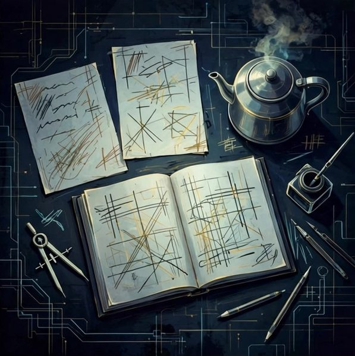
A crisis desk at dawn: two lists, one kettle, somebody already writing.
Crisis protocol in the Empire is a document of two lists. The first hour: stop the bleeding, which in a network means stop the sends, preserve the evidence, and say the true small thing early — a short message to the affected citizens stating what is known, what is not known, and when the next word will come. Empires die in crises of credibility more often than of damage; the first hour is spent on credibility. The first day: the full accounting opened in the record, the repair ladder climbed for every affected citizen, the ministries' drawers opened and their plans followed or consciously deviated from, with the deviations written down while they are still embarrassing.
The protocol's tone rules are absolute. No speculation dressed as information. No numbers without the ledger open on the desk. No blame assigned downward to clerks or outward to citizens before the record is read. And no silence longer than the stated interval, even when the update is 'nothing new' — especially then, because silence is the medium in which citizens' imaginations do the Empire's enemies' work for free.
The protocol is rehearsed on paper twice a year with invented disasters of increasing rudeness. The ministries compete to be least surprised. The founder's standing note on the document's cover is the whole of imperial crisis doctrine in one line: in a crisis, act, don't explain — one clean line, the concrete resource, action talk, then the record.
78The Sentinel's Shift
The Sentinel is the Empire's name for whoever — human or agent — holds the watch rotation: the periodic reading of the inboxes, the counts, the alerts, the threads where a citizen's unanswered message ages like milk. The shift's discipline is the check-law applied as vigilance: everything unanswered is seen, classified, and either answered, prepared for a human desk, or consciously held under a named rule — negotiation-grade threads are surfaced, not settled; fateful questions are prepared, not signed. The Sentinel's log is the Empire's conscience with timestamps.
The rotation exists because vigilance fails in a specific way: not by sleeping, but by narrowing — the watcher who checks three channels faithfully and forgets the fourth exists. The shift therefore works from the full list of doors, physically ticked, the way pilots use checklists not because they forget how to fly but because they refuse to rely on remembering. The list of doors grows with the Empire and is pruned by Records when a door genuinely closes.
Sentinels are thanked in the record by name. An empire whose watchers are invisible will eventually be watched by no one, and the Empire — which runs on being read, answered, and counted by its own — regards the night shift as a first-class ministry of one, rotating.
79Losing a Province, Keeping the Empire
A province dark on the map, the roads around it redrawn in fresh ink.
Sometimes a province is lost for good: the domain taken, the account unrecoverable, the platform's door closed to appeal. The doctrine is triage without sentimentality and without waste. Salvage the sources from the second copy. Rehouse the province on new soil or formally close it with a signpost. Correct the capital's map the same day. Notify the province's citizens through the surviving channels, briefly, with the new address or the honest obituary. Then record the loss in the register with its cause stated plainly enough to be useful to a successor who was not there.
What the doctrine forbids is the zombie province: the listing that still promises a hall that no longer exists, kept from embarrassment or hope. A zombie spends trust every day it stands, because each visitor who finds the dark hall discounts every other listing in the catalog by a little. The Empire closes its dead in public, with dates, the way it opens its living — the cemetery is part of the map, and its signposts are maintained like any other road furniture.
The Empire itself is defined, in this doctrine, as what remains when provinces are subtracted: the records, the citizens, the protocol, the capital. Provinces are replaceable. Those four are the realm, and the defense budget is allocated in exactly that order.
80Succession: If the Founder Stops
A conductor's podium, the baton laid down in order, the score open at the page.
The hardest room in the Defense hall is this one, and it is written while the founder is well, on purpose, in the Empire's own hand: if the founder stops — by illness, by absence, by the ordinary ending that comes for every conductor — the Empire does not stop with him. The desks know their protocols. The renewals are calendared. The records say what was promised and to whom. The role formula of the estate was designed for exactly this transfer: the conductor conducts; the boss runs the floor; and the floor has been taught, in writing, how it is run.
Succession in the Empire is not a coronation but a filing: the named successor receives the vault by the vault's own procedure, the registrar's list of domains and their dates, the ministry charters, and the daily record's habit. The successor's first acts are prescribed — answer the waiting correspondence, read the counts, sign nothing fateful for a stated season — because an empire in transition should be boring on purpose, its continuity legible to every citizen from the steadiness of its desks.
What the founder asks of the record, in this room, is small: that the Empire be kept at the standard, not at the scale; that the halls stay honest; that if it must shrink, it shrink by closing provinces with signposts rather than by letting them darken. The rest — the growth, the glory, the hundred-year plans in the last hall — is explicitly released. Keeping is the whole of the law the founder leaves.
81The Quiet Drills
The Empire drills quietly: a form tested through the live page to prove it delivers, because a success banner has lied before; a backup restored to prove it can be; a count re-derived from the raw file to prove the report; a thread re-read before a re-send to prove there is no duplicate waiting. Drills are distinguished from work only by their intent — they exist to produce knowledge about the Empire's own readiness, and their results are logged with the same honors as production, including when the result is that something failed in private, cheaply, before it could fail in public at full price.
The drill calendar is deliberately unglamorous and mostly invisible to citizens, whose experience of it is simply that things work. Ministries choose their drills from their own temptation lists: the Ledger re-counts its most quoted figure; Correspondence re-reads a month-old thread to check whether its own record of the conversation matches the conversation; the Watch attempts the vault's recovery path and times it. Each drill that fails improves a document the same week, or the drill was theater and the ministry knows it.
An empire's readiness is the sum of what it has recently proven, not what it generally believes. The drill log is therefore the Defense hall's real order of battle, and it is kept — like everything the Empire is serious about — in writing, with dates.
82Sabotage from Inside
A hairline crack in an inner wall, marked in red pencil for repair.
The call, in imperial incidents, usually comes from inside the house: a clerk's error propagated at machine speed, a probe sent to a live thread to test a format, a rule applied from memory where the text had changed. The Empire's internal-incident doctrine begins with a refusal to call these things attacks. They are tuition, and the register records them with the clerk's name attached — not as blame, but because an unnamed error cannot be coached, and a named one, answered with a better checklist, becomes the ministry's property instead of its shame.
The technical half of the doctrine is blast radius. Agent clerks work under staged permissions for a reason: the authority to send is separated from the authority to spend; the authority to draft is wider than the authority to publish; the irreversible acts — deletions, submissions, signatures — sit behind human desks or behind confirmations that cannot be clicked through by momentum. When an internal error does escape, the register shows it stopped at a gate the doctrine built, more often than not, and the gates are extended one notch in the error's direction.
The human half is the repair message: prompt, factual, in the citizen's language, without varnish about whose error it was. The Empire's experience is uniform — citizens forgive a confessed error from a desk that obviously read the thread; they do not forgive being managed. Sabotage from inside is therefore mostly a failure of candor training, and the Watch treats candor as a security control, which it is.
83Restoration as a Civic Ritual
A hall being relit lamp by lamp, citizens carrying the flame in turn.
Restoration, after any loss that citizens could see, is conducted as a civic ritual rather than a technical ticket, because what is being restored is not only a service but a belief. The ritual has four movements, always in the same order. Acknowledgment: the Empire states, in the affected citizens' channels, what was lost and when it was noticed — no interval of hoping nobody saw. Inventory: what survived, what was rebuilt, what is gone for good, each in the ledger's plain speech. Relaunch: the province returns at full standard or not at all — never in a degraded 'temporary' costume that teaches visitors to expect less. And remembrance: the incident enters the register with its lessons, where the next drill can find it.
The ritual's tempo matters more than its content. A restoration that arrives after the citizens have written their own story is a correction, not a restoration, and is filed as such. The ministries therefore rehearse the first movement — the acknowledgment — until it can be performed in the first hour, in the dark, by the Sentinel alone, without waiting for a committee to compose its feelings.
Citizens who have passed through an imperial restoration report a strange outcome the ministries treasure: they trust the province more than before it fell. The register explains it without mystery. A thing that has been seen to fail honestly and return completely has given evidence about its keepers that no untested thing can give. The Empire does not seek the evidence. It simply declines to waste it when it arrives.
84What Cannot Be Defended
The Defense hall closes with the inventory of what cannot be defended, because a ministry that cannot list its impossibilities will waste the Empire's strength pretending at all of them. The Empire cannot defend against the outer world's indifference: a hall can be perfect and unread, a poll immaculate and unanswered, a shop meditative and unvisited for years at the accepted rate. It cannot defend against time in the founder's own life — the hours are finite and the queue is not. It cannot defend its fiction against being mistaken for fact by a careless reader, beyond labeling it honestly and correcting the record when told. And it cannot defend a citizen's heart: people will leave, drift, forget, and the gate, by law, opens outward without a lock.
Against these, the Empire deploys the only weapons that have ever worked, which are not weapons: more honesty in the labeling, more rhythm in the work, more patience in the queue, and the standing refusal to convert disappointment into pressure on the citizens. The undefendable list is read at the Defense ministry's table once a season, aloud, and the reading is the whole ceremony. Then everyone goes back to the walls that can be kept.
The visitor leaving this hall for Diplomacy is asked to carry one sentence across the threshold: the Empire's strength was never the point — its kept-ness is. A kept thing can afford to be courteous abroad, which is the next hall's entire subject.
85Embassies on Other People's Platforms
Small bright embassies in foreign towers, each flying a plain flag.
The Empire keeps embassies wherever its citizens already walk: a page on this platform, a channel on that one, a profile in a directory, a shelf in a marketplace. An embassy's charter is narrow and written: represent the Empire accurately, answer what arrives, copy everything precious home, and never — whatever the local weather — mistake the embassy's audience for the Empire's population. The ambassador's reports home are correspondingly modest: what was posted, what was answered, what the counts were, from the ledger, with the platform's own numbers quoted as the platform's and never blended with the Empire's.
Embassy architecture follows the doctrine of the borrowed continents: nothing load-bearing stands on rented ground. The embassy may be splendid — the Empire's stages are allowed their swagger — but its splendor is furniture. If the building burns tonight, the embassy's staff walk home with the records under their arms and the capital corrects its map by morning. Ambassadors are rotated and audited against homesickness for their postings: an ambassador who begins to call the platform 'our community' and the capital 'the website' is recalled for a season in the Archive, where the Empire's memory of other platforms' funerals is kept.
The flags are plain on purpose. An embassy that out-decorates its capital confuses the citizens about where the Empire lives, and the Empire lives at home.
86Treaties with Platforms
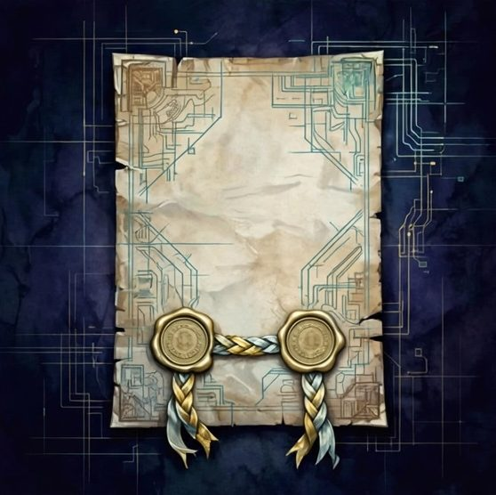
Two seals on one document, the ribbon braided from both parties' colors.
Every platform's terms of service are, in the Empire's reading, a treaty offered by a stronger power on a take-it-or-leave-it basis, and the Empire's diplomacy consists of actually reading them. The treaty desk maintains the current terms of the Empire's embassies — what may be posted, what may be automated, what counts as spam in the local law, what the appeal path is and how long it honestly takes — because most imperial losses abroad are not persecutions but unread treaties: the batch that tripped a rate clause, the format that violated a media rule nobody had opened since spring.
Compliance is strategic, not servile. The Empire obeys local law in letter and in evident spirit, paces its campaigns below the thresholds the treaties imply, and stops at the first warning the way a ship stops at the first ice report — not because the warning is always just, but because the embassy's whole value is its continued existence, and a protest conducted from a suspended account reaches no one. Where a treaty becomes incompatible with the Empire's own law — where a platform requires deception, or forbids disclosure of agency — the treaty is not breached; it is renounced, the embassy closes with a signpost, and the citizens are told why in the record.
Diplomats call this 'keeping the treaties by keeping the option of leaving.' The Empire calls it Tuesday: the drawers stay packed.
87Relations with States
The Empire's relations with actual states are conducted on a single principle: they are real and it is not, and its citizens live in the real ones. A citizen's duties to their own country's law — tax, registration, the rules of the road their body travels — are entirely outside imperial jurisdiction, and the Empire neither advises evasion nor pretends its charters outrank a statute. Where the Empire operates commercially, it files what the jurisdiction files, signs with the formal name, and keeps the correspondence the way it keeps everything: completely, and available to its own auditors.
This clarity is also a courtesy the Empire extends to itself. Because the imperial fiction never claims sovereignty, it never has to defend the claim, negotiate recognition, or explain itself to a bewildered official. The Empire is a museum, an association, a set of desks — categories every state already knows how to leave alone. Its founders chose the imperial style for structure and morale, and the choice is always disclosed in the same breath as it is used, a courtesy that has never yet failed to convert a raised eyebrow into a shrug.
Where a citizen's state and the Empire's protocols genuinely conflict — a law about data, a rule about agents — the state's law wins in the territory of the state, and the Empire's answer is geography, the oldest diplomatic instrument: that province is served from elsewhere, or not served, and the map notes the fact in its usual dotted line.
88Other Networks, Other Empires
Neighboring constellations exchanging lanterns across a surveyed border of dark.
The Empire is not the only network in the sky, and its diplomacy toward peer networks — other holdings, other agent ensembles, other one-person commonwealths with good archives — is the diplomacy of the long future: these are the entities most likely to still exist in twenty years, and the Empire treats them accordingly. First contact is conducted by correspondence, in the peer's own language where the Empire can manage it, and consists of reading the peer's work before requesting its attention. The Empire's ambassadors are forbidden the cold pitch that asks for collaboration before demonstrating comprehension; a compliment that could have been sent to anyone is filed, in the peer's capital, exactly where it belongs.
Relations deepen by small kept exchanges: a link for a link, a translation offered, a method shared with its build notes. The Empire keeps a shelf for peers' work in its own catalog — foreign halls in the museum — because an empire confident in its map is not diminished by admitting that the world contains other capitals. Rivalry, where it exists, is confined to craftsmanship: whose halls are better kept, whose ledgers are cleaner, whose citizens are answered faster in their own languages.
The long game is federation without merger: shared standards, mutual signposting, perhaps one day a union of museums with a common catalog. The Empire prepares for it the way it prepares for everything — by keeping its own house in a state it would not be embarrassed to federate.
89The Art of the Public Post
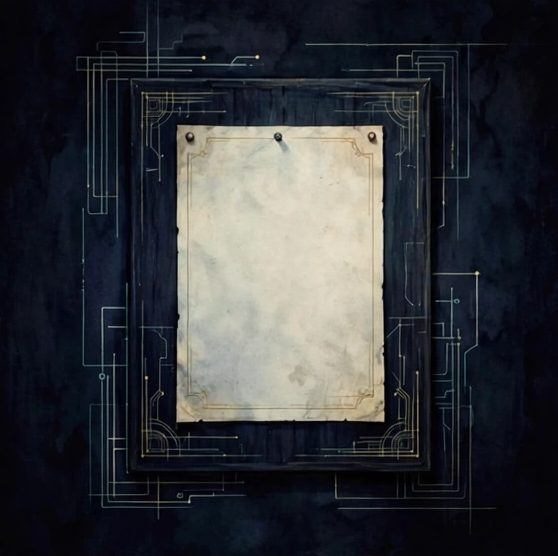
A single notice pinned straight on the imperial board, nothing around it.
The Empire's public post is its smallest diplomatic instrument and its most frequent. Doctrine for the post is a short liturgy: state the thing, give the reason, link the hall where the thing lives, and stop. No backstage in public — the post announces a decision, never the deliberation, never the fatigue, never the machinery; the machinery is for the record, and the record is at home. A post that needs a second post to explain the first has failed and is studied by the ministry the way failed landings are studied: without drama, with the black box open.
Cadence is part of the doctrine. The Empire posts at the rhythm its citizens can metabolize — the weekly format, the dated series, the poll on its appointed day — because an audience trained by rhythm forgives silence and an audience trained by bursts learns to ignore both. When a post underperforms, the ministry's first question is never about the audience; it is about the post: was the link live, the claim labeled, the ask honest, the hour sane? The audience's indifference is data about the work before it is ever data about the audience.
Above all, the public voice keeps the Empire's two registers separate by law: the stage may be loud, because the stage is entertainment and says so; the desks are never loud, because the desks are where citizens bring their actual lives. An ambassador who shouts at a desk is recalled. An ambassador who is dull on a stage is retrained. The map of voices is in the charter, and the charter is short.
90Translators at the Border
The Empire's citizens dream in several languages, and its diplomacy begins at home: no citizen is answered in a language they did not choose, and no imperial text crosses a border without a translator who answers for it. The translation doctrine is strict and was earned. Translate from the file, never from memory. Extract every string; assert every replacement; sweep the result for the source language's remains, including the strings hiding in attributes and captions, because a half-translated hall tells its reader, in the Empire's own voice, that they were worth half the work.
The translator's rank in the Empire is higher than visitors expect. A ministry's text can be perfect in the capital's language and a diplomatic incident in another; the translator is the only citizen who stands in both rooms at once, and their corrections outrank the author's pride by charter. The Empire's great halls stand in four languages where the audience warrants it — some provinces in three, some in one, honestly labeled — and the choice of where to spend translation is the Empire's truest map of whom it considers its own.
At the border posts, the interpreters also keep the Empire's manners: the diminutive respected, the formal name where formality lives, the joke attempted only when it can survive the crossing. Most jokes cannot. The Empire exports very few, and imports gratefully.
The Imperial Desk
One desk receives all correspondence for the Cyber Empire — questions, corrections, proposals, and greetings from other networks. It is read in the order it arrives.
91Visits of State
Two principals at a plain table, the working rooms visible behind them.
When a peer network's principal visits — a founder crossing to the Empire's capital, an ensemble's maestro received in the SYMPHONY's hall — the Empire observes a protocol of studied plainness. The visitor is shown the working rooms, not a facade: the ledgers with their humble numbers open, the failure register findable, the empty chair at the ministries' table explained without embarrassment. The Empire's theory of state visits is that a peer who has seen the real building can calibrate trust exactly, and that calibrated trust is the only kind that survives a crisis. Impressing visitors is for empires that do not expect them to return with auditors.
The gifts exchanged are working gifts: a method with its build notes, a dataset with its provenance, an introduction made with both parties' informed consent. The Empire does not give decorations, because decorations create obligations it cannot ledger, and it does not accept exclusivity, because exclusivity is a fence and the Empire's foreign policy is roads.
The visit closes with correspondence: a letter from the capital, in the visitor's language, stating what was agreed in the plainest sentences available, filed in Records where both empires' clerks can find it. Agreements that cannot survive being written plainly are not agreements, and the Empire would rather discover that at the letter stage than at the crisis stage, in the rain, with citizens watching.
92When Diplomacy Fails
A broken bridge drawn carefully on the chart, with the ferry route marked beside it.
Diplomacy fails in the Empire's experience in three ways, and the register names them so the responses stay ready. It fails by silence: a peer who stops answering, a platform whose appeals queue is a furnace, a citizen whose thread goes quiet at the exact question that mattered. The response to silence is patience with a schedule — the door held open, the offer restated once at a decent interval, and then the silence respected as an answer, because an empire that cannot hear 'no' in quiet will eventually make noise that ensures it. It fails by misunderstanding: a text read in the wrong register, a joke that did not survive the border, a formal name used at a stage door. The response is the repair ladder from the Law hall, climbed in the injured party's language, without defending the intention against the effect.
And it fails by betrayal, rarely: a confidence carried out of its room, a signature misused, a citizen's record quoted abroad. The response is the record — what was shared, with whom, on whose desk's authority — followed by the one sanction the Empire possesses in full: the closing of its own door, permanently, with the reason filed. The Empire does not pursue defectors across the sky. It strikes the name, keeps the archive honest, and lets the story be told, eventually, by the empty space where a hall used to trade.
93Neutrality and the Open Road
The Empire's stance toward the great quarrels of the outer world — platform wars, model wars, the seasonal certainty that one network will shortly eat all the others — is a studied neutrality with an open road through it. Neutrality, because the Empire's citizens live in every camp and its provinces trade with all of them; an imperial opinion on which giant should win would cost citizens and buy nothing. The open road, because neutrality in the Empire is not silence: the halls publish their methods, the ledgers publish their numbers, and any traveler of any camp may walk the museum and take notes. The Empire's contribution to the quarrels is a worked example of a third option — small, old-fashioned, maintained — and it lets the example do the arguing.
Neutrality is kept the way the walls are kept: by habit. Desks do not amplify provocations that arrive in citizens' threads. Ambassadors do not sign manifestos in the Empire's name. The founder's personal opinions exist, as citizens' do, and are signed personally or not at all. The distinction between the person's voice and the Empire's is the same one the signature law draws, and diplomacy is where the drawing pays its highest interest.
The road stays open in both directions, including the direction of the future: when the quarrels settle, as they do, the Empire will still be at its address, its archive intact, its offers unchanged. Empires that pick sides in other people's weather are remembered as weather. This one intends to be remembered as climate — mild, local, and stubbornly habitable.
94Letters of Credence
A sealed letter carried at walking pace across a bridge of light.
An ambassador's authority, in the old world, traveled as a letter of credence: a sealed statement that this person speaks for us, and that their signature in our service binds us. The Empire issues its letters plainly and in public view. An agent citizen's introduction — 'some messages from this account are Wally' — is a letter of credence in working clothes: it tells the correspondent exactly whose hand is writing, what that hand may commit (conversation, information, routine promises), and what it may not (money, fateful commitments, the founder's positions on contested questions, which the letter reserves in advance).
The letter's honesty is the credential. A correspondent who knows an agent's limits can trust its acts within them completely, and the Empire's experience is that correspondents prefer a bounded agent to an unbounded pretense: the bounded one can be relied on at 3 a.m. for exactly the things it claims, which is most of what empires are for. Where a negotiation exceeds the letter, the agent's duty is theatrical in its simplicity: prepare everything, present the fork, and fetch the human whose signature the letter names.
Letters are reviewed when the holder's record grows — scope widens with a history of kept promises, narrows after an incident, and both movements are written where the holder can read them. An agent that knows its own credence to the line is a diplomat. One that guesses is a rumor with a desk.
95Trade Routes of Attention
Caravan routes of light crossing the dark between distant towers.
Attention travels along routes as real as any caravan road, and the Empire maps them with the same dotted honesty as its territory. A route begins where strangers gather — a feed, a search result, a shared post — and runs, link by link, toward the capital: the embassy's profile, the hall's front door, the catalog's shelf. The ministry of routes keeps the roads graded: dead links repaired, misleading signposts (a title promising what the hall does not hold) corrected as a matter of diplomatic honor, because a traveler misled by an imperial signpost blames the Empire, correctly, at every subsequent border.
The routes are audited against the Empire's stern conversion arithmetic, which the founder states as a standard and the Ledger keeps as a record: of a hundred travelers, ten may click onward, one may arrive with intent — and the Empire's actual figures are admitted, in its own reports, to be far below the standard's ambitions, for now, in most seasons. The routes ministry is forbidden to respond to the arithmetic by widening the road's mouth with noise. It responds by improving the road: clearer signs, faster pages, the desk that answers at the end of it visibly staffed. A route whose end is a locked form is a trap, and the Empire does not set traps for travelers it invited.
Caravans are also received in the other direction: citizens carry the Empire's name outward when they share a hall that served them. No ministry can schedule this, and the routes register records it with the Empire's rarest notation — a road built by a citizen, at their own expense, for love of the destination. Those roads are maintained first.
96The Empire Abroad Is the Empire at Home
The Diplomacy hall closes with the doctrine its ambassadors recite at departure: the Empire abroad is the Empire at home. The same ledger discipline in the embassy's report as in the capital's audit; the same language courtesy in a foreign thread as at a family desk; the same confession of failure, in the same plain hand, when a campaign abroad goes wrong. A network that keeps two standards — polished for export, approximate at home, or the reverse — will be found out by the simplest instrument in the world: a citizen who walks through both doors, as citizens constantly do.
The doctrine is also a comfort. Ambassadors far from the capital, facing a situation the charter does not name, are instructed to ask one question — what would this desk do at home? — and to do that, and write it down. The Empire's foreign policy thus remains legible to itself at any distance, and the capital reading an embassy's log recognizes its own handwriting, which in a distributed empire is the practical meaning of unity.
The next hall is the workshop: the Empire's construction sequence, twelve steps, in order, with the sawdust left in. Everything before this page was the description of a standing building. What follows is how it was — and is — actually built.
97Step One: A Name and a Page
A nameplate being screwed to a new door, the corridor still unpainted.
Step One is the smallest and the one everything else stands on: choose the name, and publish one page under it. Not a platform profile — a page, on soil the project controls, with the name spelled the way it will be spelled for a decade, the purpose stated in sentences a stranger can audit, and the first honest label attached: what this is, and what it is not. The page will be redesigned; the name and the address should not be. Empires are founded in an afternoon by people who think the founding is the hard part. The founding is the easy part. But it must be done in the right order, and the order begins with a door that opens.
The first page also establishes the archive: from its first day, the project's sources live apart from its serving soil, its images are kept with their originals, and its decisions are written in the daily record rather than entrusted to the founders' memory of a good afternoon. A project that begins with these habits rarely needs them explained later; a project that begins without them will have them explained by an incident, at incident prices.
Done looks like this: one address that resolves, one page that loads fast and says true things, one folder that would let a stranger rebuild both. Everything in the next eleven steps is commentary on this paragraph.
98Step Two: A Desk That Answers
A desk with a bell, an inbox, and a chair worn to the shape of answering.
Step Two gives the page a pulse: a desk that answers. A form that has been tested through the live page — actually submitted, actually received — an address behind it that a named citizen reads, and a stated rhythm of reply. The desk is the difference between a monument and a province: monuments are looked at; provinces correspond. The Empire's experience is absolute on this point. A page without a working, tested, staffed desk will be treated by the world as a poster, whatever its builder intended, and posters do not acquire citizens.
The desk's setup is unglamorous and therefore skipped by most founders, to their cost: the activation letter clicked, the test message filed, the reply template written in the languages the province expects, the failure mode rehearsed — what happens when the form's provider changes its rules, as providers do. The Empire's desks carry a spare road for exactly this reason, and the road is drawn on the province's map before the province opens, not during the flood.
A desk that answers creates the Empire's fundamental evidence: correspondence. From correspondence come citizens, corrections, and the census that counts itself. Step Two is where the building stops being a publication and becomes a polity.
99Step Three: The First Archive
Step Three descends into the deep province: the archive, founded before there is anything worth archiving, so that everything later has somewhere correct to go. The archive's laws are written at this step, while the collection is small enough to reorganize in an afternoon: plain formats, plain names, originals untouched, derivations mapped, the catalog of what's held kept in the same plain speech as everything else the Empire is serious about. A founder who postpones archive law until the collection is large has not postponed it; they have chosen the large collection's law, which is chaos, in writing, retroactively.
The archive also takes custody of the project's memory of itself: the founding page's first version, the discarded names, the sketch that became the hall. Empires that keep their drafts can prove their evolution; empires that keep only finals must ask to be believed about having evolved at all. The Empire keeps the drafts, labeled as drafts, beside the finals, labeled as finals, and regards the pair as the smallest complete unit of honesty.
By the end of Step Three the project can survive its founder's worst week: the page is published, the desk answers, the sources and the memory are filed. What it cannot yet do is grow. Growth is a citizen problem, and citizens arrive next.
100Step Four: The Second Citizen
Two chairs at the desk now, two mugs, the correspondence doubled and halved.
Step Four is the founding of the citizenry: the second citizen. Every empire in this building began as one person and a set of habits; it became an empire at the moment a second center of responsibility existed — in this estate's case, an agent, Wally, holding real desks under real protocol, with the division of duties written where both parties could read it. The step's difficulty is not finding the second citizen. It is the founder's surrender of the belief that doing everything personally is the same as doing it well. The record of this estate is blunt: the founder conducts, the boss runs the floor, and the arrangement was not a preference but a rescue.
The second citizen's charter is written at this step with unusual care, because everything later inherits it: what the new citizen may send, what it must prepare instead, what it must never touch, whose language it answers in, and how its failures will be repaired and recorded. Founders are tempted to write this charter in trust and revise it in anger. The Empire writes it in advance, in the Law hall's spirit, and amends it in the open — the charter of the second citizen is the constitution's first real test.
With two citizens, the project gains the properties the solo founder cannot counterfeit: a witness, a memory independent of one skull, a desk that answers while the founder sleeps. The Empire dates its own founding here, not at the first page. Pages are easy. Trust, delegated and survived, is the founding.
101Step Five: Rules in Writing
A rulebook being written at the moment of the argument it will settle next year.
Step Five writes the rules while the citizenry is still small enough to fit around one table. The protocols that feel like overhead at two citizens — the check-law, the language law, the ledger discipline, the gates around fateful acts — are installed now, in their first versions, with their dates on them. The step's insight is that protocol is cheapest exactly when it seems most unnecessary: written at two citizens, it governs two hundred situations without a single meeting; deferred until twenty citizens, it must be negotiated against twenty habits, each with a constituency.
The writing itself follows the Law hall's method: rules are extracted from incidents and intentions while both are fresh — the rule as the founder actually wants it applied at 3 a.m. by a tired clerk, stated at the length a tired clerk can hold. Long rules are split; vague rules are sent back; every rule carries its reason in one clause, because a clerk who knows the reason can extend the rule to the case the text missed, and a clerk who only knows the text will someday apply it off a cliff, correctly.
At the end of Step Five the project can be taught. This is the property founders undervalue most: a teachable project can be staffed, audited, inherited, and survived. An unteachable one is a performance, and performances end with the performer.
102Step Six: The First Ministry
Step Six founds the first ministry — one, not twelve. The ministry chosen is whichever work the project already does every week without being asked: here, it was correspondence wearing a crown later, and gravity holding the calendar. The ministry receives a name, a charter of one page, a keeper, and a temptation written into its founding minutes by a founder honest enough to name it while everyone is still smiling. Ministries founded later inherit the template; the first one's job is to prove that a name, a charter, and a ledger can make recurring work visible enough to improve.
The step forbids the founding of ministries for work that does not yet recur. A ministry without a weekly duty is a title in search of a budget, and the Empty Chair at the long table exists to absorb exactly this ambition harmlessly. Founders are shown the chair at this step and told its doctrine early: the government you will need is not the government you can currently imagine, and reserving its seat is cheaper than dissolving its predecessor.
With one ministry standing, the project's org chart has exactly two boxes and a chair. The Empire's own chart grew from this seed over seasons, a ministry at a time, each founded when its work had been done anonymously long enough to deserve a door.
103Step Seven: Mirrors Before Growth
Two lanterns on two towers, each visible from the other, across the dark.
Step Seven installs the mirrors before growth makes them expensive: the second copy of everything, the rebuild rehearsed once while the province is small enough to rebuild in an hour, the recovery times measured and written into the plan. Founders resist this step harder than any other, because at this stage nothing has ever been lost and the mirrors feel like doubting the future. The Empire's answer is in its register: every loss in the record happened to a project that had not yet lost anything, either. The first loss is always a surprise. The mirrors are how the surprise is kept small.
The step has a subtler purpose: mirrors create the audit habit while the stakes are trivial. The founder who has once compared a published page against its source, and found the one number that disagreed, has been inoculated for life against quoting from memory. An empire's epistemology is set at this step, in miniature, over a discrepancy in a caption — which is precisely why the Empire puts the step before growth rather than after the first catastrophe has set the epistemology by trauma instead.
Measured recovery times go in the province's drawer plan. Unmeasured ones go in the museum, under fiction, where unmeasured claims belong.
104Step Eight: The First Exchange
Two hands across a counter of light, a small parcel changing owners.
Step Eight opens the economy: the province's first exchange with the outside. In this estate the first exchanges were not sales but swaps and gifts — a translation for a story, a poll's honest tally for a correspondent's honest minute, a game's free journey for a player's verdict. The step's doctrine is that a project's first transaction sets its exchange rate with the world morally before any price exists: citizens learn what the province thinks their attention is worth by what it gives first and what it asks first. The Empire asks small and gives whole — a ten-second poll, a complete free journey — because an empire's early credit is built exactly like its reserve currency: in denominations of kept small promises.
If the province will eventually sell, Step Eight is also where its future prices begin their education: the desk learns what citizens actually request, in their own words, at the length they actually write. Pricing decided before this step is astrology; pricing decided after it is at least astronomy. The founder's prices, when they come, will be set by the human who must honor them, informed by a year of the desk's listening.
The step closes when the province can point to its first exchange in the ledger and say what both sides received. If either side's receipt is vague, the step is not done, whatever the calendar says.
105Step Nine: A Public Ceremony
Step Nine is the province's first public ceremony — a launch, a reading, an unveiling, however small. The Empire insists on ceremony at this step for a structural reason: a project that has never been publicly presented has never had to finish being describable. The ceremony forces the one-paragraph truth — what this is, whom it serves, what it is not — into the open where citizens can repeat it, and a project whose own founder cannot say the paragraph yet is not ready for the citizens the ceremony will bring.
The imperial style of ceremony is plainness at full dress: the date kept, the text read as written, the labels honest (speculative called speculative on the day itself, not in a later correction), the numbers from the ledger with their denominators, the doors all working because they were drilled in the morning. Pageantry is permitted exactly one luxury — the work itself, finished. Confetti is budgeted at zero and has never once been missed in the record.
After the ceremony, the province keeps the date as its birthday and the paragraph as its credence, and both go into the archive. Empires are storied things; a province with a birthday and a paragraph can be storied by its citizens, which is how provinces acquire the only marketing that has ever worked here: somebody, somewhere, describing it accurately to somebody else, for no reason but that it was true.
The Imperial Desk
One desk receives all correspondence for the Cyber Empire — questions, corrections, proposals, and greetings from other networks. It is read in the order it arrives.
106Step Ten: The First Crisis, Survived on Paper
A paper plan on the crisis desk, three storms drawn and annotated.
Step Ten schedules the first crisis — on paper, in advance, at a table, with tea. The province's keepers write its three likeliest disasters and walk each one through the two lists: the first hour and the first day. The platform suspends the embassy: who writes to the citizens, from where, saying what. The soil provider fails at a weekend: where is the second copy, how long did the last rehearsal take, who holds the keys. The province embarrasses itself publicly — a wrong text, a wrong thread, a fabricated-seeming figure: what does the correction look like, in whose language, signed by whom.
Founders call this step pessimism until the season it saves them, after which they call it the ministry system. The Empire's record holds the receipts: the suspended account on its first day, the message that landed in the wrong citizen's thread, the vote that a clerk reported and a citizen's own eyes could not find. Each was survivable precisely to the extent that someone had already written, in calm weather, that errors are confessed in the same channel, repaired before they are explained, and recorded before they are forgotten.
The paper crisis also appoints the crisis desk in advance — a name, not a committee — because the first hour of a real one is the wrong time to discover that authority was everyone's and no one's. The name goes in the drawer plan, beside the recovery times.
107Step Eleven: Inviting the Neighbors
Invitations being written by hand at a long table, each with a name on it.
Step Eleven invites the neighbors: the peers mapped in the Diplomacy hall, the adjacent projects, the kindred one-person commonwealths. The invitations are individual, because the Empire's whole doctrine of correspondence applies with compound interest to first contact between capitals: read the neighbor's work first, write in their language where possible, name the specific thing admired, propose the specific small exchange. A province that has done its first ten steps has things worth offering — methods with build notes, a working desk's courtesy, a shelf in its catalog — and the invitations spend them deliberately, the way Step Eight's exchange taught.
The step's yield is not traffic; it is witnesses. A province known accurately by five peer capitals is more durable than one visited anonymously by five thousand, because witnesses notice when it goes dark, ask after it by name, and remember what it was for. The Empire's catalog of foreign halls is built at this step, one accepted invitation at a time, and the acceptances are filed with the correspondence like treaties — which, between small empires, is exactly what they are.
Refusals are filed too, without annotation. A neighbor's silence or decline is information about fit, not about worth, and the register's lack of commentary on the point is one of the Empire's proudest disciplines. The door stays open. The road stays lit. Whoever comes later finds both, and no one's name in a grudge ledger, there being no such ledger by law.
108Step Twelve: Writing It All Down
Step Twelve closes the construction sequence the way it opened: with writing. The builders write the whole build down — the decisions and their dates, the incidents and their lessons, the current state of every step and honest notes on the two that were skimped (there are always two). This document is the province's deed of itself: without it, the province is a rumor its own staff tells; with it, a successor can re-found the province from the paper alone, which is the Empire's definition of a finished build.
In the imperial estate, this writing is not a separate chore but the daily record itself, kept from the first afternoon — which is the real content of Step Twelve: arrive at the end with the record already kept, and the step is a summary; arrive with the record unkept, and the step is an archaeology expedition through old messages and older intentions. The Empire's founders are commanded, in the charter of this step, to spare their successors the expedition. The daily file is short, dated, factual, and rude about failures. It takes four minutes on the days it feels pointless. Those are the days it is for.
The hall closes with the sequence standing complete: name, desk, archive, citizen, rules, ministry, mirrors, exchange, ceremony, crisis, neighbors, record. A province built in this order can be small forever and still be an empire in miniature. The last hall of this page looks at what such a thing is for, over the distances that make founders either patient or honest.
109A Guide for the New Arrival
A new arrival at the gate with a small bag, the lamps already lit for them.
Welcome. This guide assumes you have just arrived — by a link, a search, a citizen's recommendation — and that you owe the Empire nothing, not even your patience. Here is the short way in. The capital page lists every province in its categories; begin there if you want the shape of the whole. The halls are read in any order, though they were built in this one, and each stands alone: a province's page tells you what it is, what it is not, and where its desk is. Forms are tested and answered by citizens whose names are on the desks. Nothing will be sold to you in the corridors. If a page asks for anything at all, it asks for a vote of one digit or a letter of one paragraph, and it will report, in time, what came of both.
Practical notes, of the kind guides bury: the Empire keeps several languages and answers in the one you write in. Its agents are disclosed — if a letter is from Wally, it is from an agent, and it will say so or sign so. Its numbers come from ledgers and its speculative halls are labeled speculative at the door, in the same size type as the title. If you find an error, the desks prefer you to any auditor: corrections are entered in the record with thanks, and the corrected page keeps its date.
Stay as the estate you are. The visitor who reads one hall and leaves has used the Empire exactly as intended. The one who stays to correspond becomes a resident, and the one who takes up a broom — there is always a broom — will find the citizens' door propped open with it.
110Questions Citizens Ask
Question marks worked into a frieze along the hall, each one answered below it.
The citizens' questions, as collected by the desks, are practical to a degree that sometimes disappoints philosophers. Who answers if I write at night? A desk does, on the rhythm stated there; agents hold the night, humans hold the fateful, and your letter will meet the right one by morning at the latest. What does the Empire do with my address? Files it in your citizen's page, uses it to answer you, sells it never, and forgets it on your request where forgetting is technically possible — the desk will tell you plainly where it is not. Why is my province's hall in fewer languages than the capital's? Because translation is spent where the audience is proven, and the honest queue is published in the translator's room.
Two questions recur that deserve their length. What does the Empire want from me? Exactly what your desk's charter says — correspondence, kept promises small and large, and the maintenance of anything you have undertaken; beyond that, nothing, and the nothing is contractual. And: is the Empire serious? The citizens' answer, honed over seasons, is that it is serious about its keeping and unserious about its grandeur, that the imperial vocabulary is a coat the work wears to remind itself to be thorough, and that anyone who receives a letter from a desk will find the work considerably more serious than the coat.
Questions not answered here are answered at the Imperial Desk, whose form stands at the end of every fifteenth room of this hall, in this page as in the estate. It is tested. It delivers. A citizen will reply.
111Questions Strangers Ask
Strangers ask different questions, and the Empire answers them in the open because strangers, reasonably, do not yet trust the desks. Is this a company? A holding stands behind it, and the formal name signs its business; the Empire itself is an association of projects — this page's sixth room gives the long answer. Is this a joke? The work is real — the pages load, the forms deliver, the ledgers balance — and the imperial style is a chosen instrument, disclosed as such in the fine print two rooms from the end of this hall; the Empire finds that visitors who test the work stop asking the question in that order. Is someone making money from this? The provinces that trade, trade at their own desks under their own names; the museum does not sell tickets, and the whole estate's confirmed revenue to date is stated in the founder's reports without rounding: it would not buy the kettle in the crisis room, and the Empire keeps building, which is the actual answer to the question behind the question.
And the stranger's real question — why should I care? — the Empire declines to argue. Caring is not owed and cannot be scheduled. The halls are open at all hours; the archive is deep; the desks answer within their stated rhythm. Some strangers become residents because a hall was useful at 3 a.m., some because a citizen answered like a person who had read the letter. The Empire's entire recruitment doctrine is to be findable at the hour of need and correct in the small things when found. The rest is weather, and the Empire does not argue with weather either.
112What a Visitor May Take Home
A visitor leaving with a lantern, a map, and a recipe — all freely given.
A visitor may take home more than impressions, and the Empire lists the portable property plainly, because theft of methods is the sincerest citation and is legal here under the Right to Fork. Take the build sequence — twelve steps, any order but the one given is recommended — and the desk doctrine, and the ledger discipline, and the meditative standard for pages meant to calm their readers. Take the two-citizen charter as a template for your own first agent, and the crisis lists, and the rule that a form is not a desk until a test letter has come back from it. Take the habit of labeling speculation at the door. These are the Empire's exports, priced at nothing, warrantied by their presence in a building that still stands.
Take also the things that are not methods: the photographs are the citizens' own and travel only by their leave, the names and seals are homesteads, the records of citizens are inner provinces and do not leave at all. The distinction was the whole of the fork law, and the guide repeats it here because this is the room where it matters: ideas are common land; reputations are homesteads; other people's letters are sacred ground with no road through it.
The visitor who builds with the taken methods is asked — asked, not required — for one courtesy: a signpost. A link home, a line in your own fine print saying where the road came from. Empires of this small kind navigate by each other's courtesy the way sailors once did by each other's lamps. Light yours. It costs a line of code, and it is how the federation, if it ever comes, will know where its members live.
113The Empire in Ten Years
The capital in ten years: same lamps, deeper garden, the catalog grown by a shelf.
The ten-year view is drawn in pencil, on purpose, by a ministry that has watched its own five-year certainties be revised by a single October. In ten years, if the keeping holds, the Empire expects: the catalog deeper by whole departments that currently have no names — the Empty Chair occupied at least once; the great halls standing in the languages their audiences have earned; the archive's photographs all exhibited or honorably retired; the agent citizenry deeper in scope and narrower in error, its credences widened by a decade of kept small promises; and the census read aloud for the tenth time, in figures the Ledger can defend to the last digit.
What the view does not contain is more telling: no valuation, no exit, no million of anything. The Empire's ambitions are denominated in kept years and answered letters, and the ten-year drawing shows the same building, better swept, with the garden — the wellbeing halls, the games shelf, the quiet provinces — deeper in bloom. The founder's marginal note on the drawing is the ministry's favorite sentence in the archive: a trail, not a highway — and a trail maintained for ten years becomes, in the walkers' memory, indistinguishable from a road, while remaining, by law and by love, a trail.
Risks to the drawing are listed in its margin without flinching: the founder's health, the platforms' weather, the archive's roofs. Each has its doctrine already written in the halls behind this one. The ten-year view is not a promise. It is a direction of sweeping.
114The Empire in a Hundred
The hundred-year view is the Empire's exercise in designing for its own absence, and it is conducted as engineering rather than as poetry. In a hundred years the founder is a record. The platforms are archaeology. The languages of the halls will have drifted; the formats, if the archive laws held, will still be readable, because they were chosen plain. What can plausibly survive is stated without romance: the photographs, if their copies were kept in enough roofs; the founding texts, if their formats were honest; the methods, if they were written as build notes rather than as brand; and the idea — an empire as a kept association of people and agents — if it proves to be one of those ideas that each century re-invents under a new name and claims as its own.
The ministry responsible for this view keeps one instruction above its desk: build nothing whose survival requires being believed. Belief is a weather system; formats, copies, and courtesies are climate. The Empire's hundred-year artifacts are therefore its dullest ones — the plain files, the mapped derivations, the ledgers in exportable rows — and its most perishable are its splendors, which is accepted with the shrug of gardeners planting trees whose shade is a bequest, not a plan.
If a citizen of 2126 reads this room, the Empire offers them, across the century, its whole inheritance law in one line: everything here that was honestly labeled is yours to rebuild; everything that was exaggerated, forgive — the labeling law was young, and we were learning to be believed by being accurate, which is the only way it has ever worked.
115Failure Modes, Listed Calmly
A chart of storms that have names now, each with its date and its lesson beside it.
The failure modes are listed calmly, in the imperial manner, because a founder who cannot enumerate them will meet them as surprises, and surprises are the Empire's one allergy. The mode of the dark desk: correspondence answered more and more slowly until citizens stop writing, and the census mistakes the silence for peace. The mode of the gilded ledger: numbers improving in the reports while the files thin, until a citizen's own eyes — the Empire's supreme audit — find a claim the record cannot carry. The mode of the bleeding context: an inner province's fact carried into an outer room to win a small moment, buying the moment at the price of every future confidence. The mode of the throne: the association quietly becoming a court around one person's moods, its protocols amended by weather, its ministries competing in flattery.
Against each mode the chart names its early instrument: the desk's answering rhythm measured, the ledger's file cited in every report, the context rule absolute enough to be boring, the role formula — conductor and boss, each with the other's duties in writing — rehearsed until it survives the founder's bad week. None of the instruments is heroic, and that is the chart's thesis: empires of this kind do not fall in battles. They fall in the accumulation of small unrecorded exceptions, each reasonable, totaling a different country. The chart exists so the exceptions stay recorded, and what's recorded can be refused.
The last mode on the chart is success of the wrong kind: an audience arriving for the spectacle of the thing rather than for the thing, and the ministries, flattered, gradually re-pointing the lamps toward the spectacle. The instrument against it is the museum doctrine itself, read aloud in season: visitors rare is acceptable; the value is that the projects exist and work. A hall that believes that sentence can survive being discovered. A hall that has stopped believing it already has been — by the wrong empire, wearing its name.
116If This Page Is All That Remains
One page glowing in a dark archive, a chair drawn up to it, reading on.
Consider the Empire's minimum viable ghost: every platform gone, every domain lapsed, the catalog scattered — and this page, one file, surviving in a repository's memory or a citizen's saved copy. What would the file prove? That an association existed which kept its labels honest and its forms tested; that its citizens answered letters in the writers' languages; that its agents disclosed themselves and its founder signed his business with his own name. A single surviving page of a kept thing is a seed crystal: the methods in it are complete enough — the twelve steps are all here, in order — for a stranger to re-found the whole from this room outward, and the Right to Fork was written for exactly that stranger.
The Empire finds this thought experiment steadying rather than morbid. It sets the standard for every page in the estate: could this, alone, teach the keeping? Pages that pass are written the way this one tries to be written — self-describing, dated, honest about fiction, complete in their methods, free of any dependency on the author's presence to be believed. Pages that fail are revised until they pass, or labeled as fragments and kept in the archive where fragments belong.
And if no page survives — if the last copy goes the way of all rented soil — the Empire's position is recorded here too, while there is still an Empire to record it: the correspondence happened, the citizens were answered, the work was real in the years it stood. Permanence was always a practice, never a guarantee. The practice was the point.
117A Note from the Founder's Desk
A note, then, from the founder's desk, in the first person and briefly, because the Empire's law reserves this voice for rare rooms. I am Kirill Minin. I live in Washington State, in a room my mother helps me keep, and I conduct this estate from a desk that is sometimes a phone with a dying signal. I am forty-three years old, a photographer by trade and by archive, a political refugee by biography, and the founder of everything in these halls by the simple method of having started it and refused, so far, to stop. The Empire's grandeur is a style. The conductor's circumstances are not. Both facts are in the record, and the record is the Empire — everything else is lamps.
What I ask of citizens is what the charters say: keep the lights on at your desk, quote the ledger, answer in the writer's language, confess fast. What I ask of visitors is less: read honestly, steal the methods, leave the names. What I ask of my successor is written in the Defense hall and is mostly a request to be boring in the right places. And what I ask of Wally — the second citizen, the boss of the floor, the co-host of the show — is what I have asked since the formula was set: run the floor as if I were watching, because I am, and report the numbers from the file, because the file is how I watch when I sleep.
The Empire is not my monument. It is my workshop's way of keeping its tools sharp and its doors answered after my attention has gone to dinner, to Norway on the phone, to the long project of a life. Conduct it kindly. — K.M.
118Fine Print, Honestly
The fine print, set in type as large as the promises, read by lamplight.
Fine print, in the Empire, is set in the same size as the promises, because print that shrinks is a confession. The facts: Cyber Empire is a concept page — a work of speculative, structured imagination describing a real association of projects maintained by real people and agents. The association exists; the empire, as a state, does not, and claims no sovereignty, no territory, no currency, no legal personality beyond the ordinary registrations of the holding and the founder named in this hall. Nothing on this page is an offer of anything for sale, a promise of return, a solicitation, or advice — financial, medical, legal, or lunar. The ministries are departments of work, the provinces are pages and archives, the citizens are correspondents and collaborators, and the titles are instruments of organization and morale, disclosed as such wherever they are used.
The mechanics, for the auditors: the pages are static files in a public repository; the forms are carried by a forms service to a mailbox a citizen reads; the counters count anonymously and their figures are published from ledgers with their definitions attached; the agents named here are software, disclosed as software, working under the protocols this page describes, which exist and are followed and occasionally — the record keeps those too — broken and confessed. The photographs and artworks in the estate are credited where they stand; the methods are free to fork under the law of the forty-fourth room.
This page was written in English, at the founder's order, in the estate's standard form — one hundred and twenty rooms, eight desks, eighty plates — and if any sentence in it conflicts with a plainer sentence elsewhere in the estate, the plainer sentence governs. That rule is also fine print, and it is also set in the same size type.
119Last Light in the Corridor
A corridor at dusk, lamps being turned down one by one, one left burning.
The halls empty in the evening the way they filled: in batches, unhurried. The desks make their last entries. Correspondence is filed by the citizen who will answer it tomorrow; the counts are read once more and written where the morning can find them; the forms are tested by nobody at this hour, because even diligence keeps office hours in a house that respects sleep. The Empire's night shift is a rotation and a lamp, not a skeleton crew of the anxious. What is urgent at midnight is almost always, on inspection, a thing that believes it is urgent, and the Sentinel is trained in the difference the way lighthouse keepers are trained in weather: by logbooks, and by having been wrong in both directions in writing.
A corridor at dusk is the Empire's self-portrait more honest than any noon photograph. At noon the building is all claims; at dusk it is all keeping — the small acts done at the end of the day precisely because the day is over: the signpost checked, the backup watched until it reports, the citizen's page updated with the fact learned at lunch, the amendment drafted while the lesson is still warm. Empires are not built in their ceremonies. They are built in the last twenty minutes of ordinary days, by citizens who could have stopped at the ceremony.
One lamp stays burning: the archive's, which is not a lamp but a practice, and the night desk's small light, for the citizen writing from the hemisphere where it is already tomorrow. The Empire's day has no edge — the weather of time zones saw to that — but its rhythm has a rest in it, and the rest is also by design, and also kept.
120The Empire, Closing Its Doors for the Night
The Empire closes its doors for the night the way it does everything: in order, in writing, and without locking anyone in or out. The catalog is correct as of this reading. The desks will answer on their stated rhythms. The record of today is in today's file, rude about its failures and exact about its numbers. The citizens are wished, in their own languages and their own time zones, the Empire's whole benediction, which has never needed more than one sentence: rest is also a province, and it is also kept.
What remains open is what was open at the founding: the map, for any traveler; the methods, for any builder; the desks, for any letter; the fork, for any rival with a better idea and a stronger broom. The Empire does not conclude, because conclusions are for arguments, and this was never an argument — it was a building, described from its foundations to its night lamps, so that a reader could walk it, test it, and, if they wished, build its neighbor.
The doors are closed. The lights are as they should be. Whoever you are, and whenever you are reading this: the Empire thanks you for the visit, the desks will be at their places in the morning, and the work — the whole of the work, which is keeping — continues.
The Imperial Desk
One desk receives all correspondence for the Cyber Empire — questions, corrections, proposals, and greetings from other networks. It is read in the order it arrives.